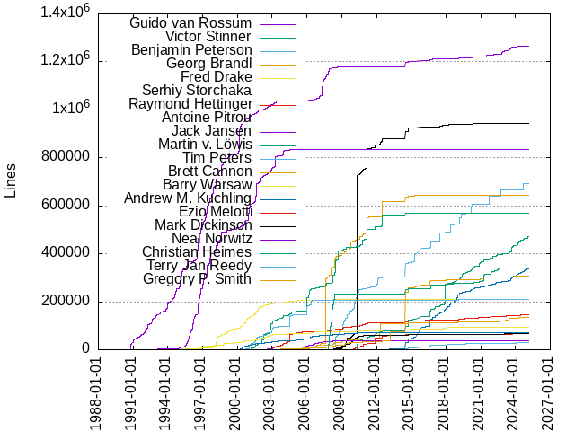
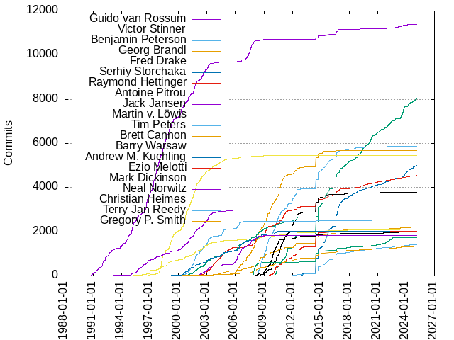

Authors
| Author | Commits (%) | + lines | - lines | First commit | Last commit | Age | Active days | # by commits |
|---|
| Guido van Rossum | 11405 (9.15%) | 1264922 | 793252 | 1990-08-09 | 2024-10-26 | 12497 days, 0:59:36 | 2434 | 1 |
| Victor Stinner | 7959 (6.39%) | 463052 | 460275 | 2010-01-30 | 2024-11-29 | 5417 days, 13:20:12 | 1954 | 2 |
| Benjamin Peterson | 5875 (4.72%) | 690740 | 781700 | 2008-03-25 | 2024-09-13 | 6015 days, 17:32:22 | 1352 | 3 |
| Georg Brandl | 5680 (4.56%) | 644620 | 640217 | 2005-06-03 | 2023-07-31 | 6631 days, 21:38:27 | 1089 | 4 |
| Fred Drake | 5465 (4.39%) | 209570 | 177835 | 1996-07-23 | 2011-03-03 | 5335 days, 11:42:38 | 1268 | 5 |
| Serhiy Storchaka | 4965 (3.98%) | 334982 | 208806 | 2012-12-27 | 2024-11-27 | 4352 days, 16:54:36 | 1478 | 6 |
| Raymond Hettinger | 4535 (3.64%) | 144971 | 59001 | 2002-05-12 | 2024-10-08 | 8185 days, 15:53:33 | 1800 | 7 |
| Antoine Pitrou | 3781 (3.03%) | 944685 | 776587 | 2008-07-22 | 2024-03-17 | 5716 days, 14:53:52 | 934 | 8 |
| Jack Jansen | 2978 (2.39%) | 836527 | 691078 | 1992-08-13 | 2006-04-20 | 4998 days, 7:25:06 | 810 | 9 |
| Martin v. Löwis | 2765 (2.22%) | 570632 | 389794 | 2000-09-08 | 2015-02-09 | 5266 days, 14:42:02 | 953 | 10 |
| Tim Peters | 2537 (2.04%) | 209848 | 160944 | 2000-06-30 | 2024-05-25 | 8729 days, 18:03:46 | 895 | 11 |
| Brett Cannon | 2204 (1.77%) | 305631 | 283176 | 2003-04-19 | 2024-11-07 | 7873 days, 17:40:00 | 798 | 12 |
| Barry Warsaw | 2103 (1.69%) | 93346 | 66107 | 1994-07-25 | 2023-05-03 | 10508 days, 14:03:09 | 717 | 13 |
| Andrew M. Kuchling | 2032 (1.63%) | 69830 | 37630 | 1998-04-09 | 2010-12-15 | 4632 days, 11:40:57 | 740 | 14 |
| Ezio Melotti | 2025 (1.63%) | 66038 | 51890 | 2009-06-25 | 2024-04-03 | 5395 days, 14:04:21 | 454 | 15 |
| Mark Dickinson | 1979 (1.59%) | 66408 | 25177 | 2008-01-08 | 2024-06-02 | 5989 days, 11:34:46 | 460 | 16 |
| Neal Norwitz | 1815 (1.46%) | 37333 | 52272 | 2001-12-19 | 2009-01-05 | 2573 days, 7:23:53 | 541 | 17 |
| Christian Heimes | 1740 (1.40%) | 339706 | 178947 | 2007-10-31 | 2023-05-20 | 5680 days, 4:39:25 | 546 | 18 |
| Terry Jan Reedy | 1406 (1.13%) | 28389 | 16068 | 2012-01-09 | 2024-10-14 | 4661 days, 21:51:49 | 539 | 19 |
| R David Murray | 1341 (1.08%) | 38353 | 10867 | 2011-03-10 | 2016-12-25 | 2116 days, 4:16:28 | 329 | 20 |
These didn't make it to the top: Gregory P. Smith, Senthil Kumaran, Vinay Sajip, Éric Araujo, Steve Dower, Jeremy Hylton, Yury Selivanov, Ned Deily, Berker Peksag, Greg Ward, Tarek Ziadé, Martin Panter, Thomas Heller, Nick Coghlan, R. David Murray, Zachary Ware, Skip Montanaro, Ronald Oussoren, Andrew Svetlov, Stefan Krah, Nikita Sobolev, Eric Snow, Irit Katriel, Walter Dörwald, Pablo Galindo, Kurt B. Kaiser, Mark Shannon, Amaury Forgeot d'Arc, Larry Hastings, Erlend E. Aasland, Alexander Belopolsky, Brian Curtin, Florent Xicluna, Thomas Wouters, Eli Bendersky, Erlend Egeberg Aasland, Eric Smith, Neil Schemenauer, Just van Rossum, Charles-François Natali, Hirokazu Yamamoto, Marc-André Lemburg, Alexandre Vassalotti, Michael Foord, Fredrik Lundh, Dong-hee Na, Jesus Cea, Sandro Tosi, Zackery Spytz, Jason R. Coombs, Hugo van Kemenade, Michael W. Hudson, Alex Waygood, Ethan Furman, Łukasz Langa, Pablo Galindo Salgado, Barney Gale, Sam Gross, Matthias Klose, Nadeem Vawda, Inada Naoki, Kumar Aditya, Jelle Zijlstra, Brandt Bucher, Richard Oudkerk, Kristján Valur Jónsson, Petri Lehtinen, Petr Viktorin, Anthony Baxter, Collin Winter, Lars Gustäbel, Chris Jerdonek, Eric V. Smith, INADA Naoki, Facundo Batista, doko@ubuntu.com, Mark Hammond, Sjoerd Mullender, Adam Turner, Hye-Shik Chang, Ken Jin, Armin Rigo, Julien Palard, Andrew MacIntyre, Lysandros Nikolaou, Tian Gao, Hai Shi, Giampaolo Rodolà, Kirill Podoprigora, Andrew Kuchling, Shantanu, Robert Collins, Giampaolo Rodola', Donald Stufft, Meador Inge, Donghee Na, Ka-Ping Yee, Xiang Zhang, Xavier de Gaye, Cheryl Sabella, Sergey B Kirpichev, Jesse Noller, Trent Nelson, Steven M. Gava, Hynek Schlawack, Eric S. Raymond, Tim Golden, Guilherme Polo, Dennis Sweeney, Andre Delfino, Jeffrey Yasskin, Batuhan Taskaya, Roger E. Masse, Ross Lagerwall, Andrés Delfino, Tal Einat, Johannes Gijsbers, Bénédikt Tran, sobolevn, dependabot[bot], Xtreak, Carl Meyer, Philip Jenvey, Oleg Iarygin, Dino Viehland, Ammar Askar, Phillip J. Eby, Mariatta, Gustavo Niemeyer, Michael Droettboom, AN Long, Steven Bethard, Anthony Sottile, Sergey Fedoseev, Jeroen Ruigrok van der Werven, cvs2svn, Stéphane Wirtel, andrei kulakov, Batuhan Taşkaya, Jeroen Demeyer, George Yoshida, Géry Ogam, mpage, Stanley, Nice Zombies, Joannah Nanjekye, Ivan Levkivskyi, Alexey Izbyshev, Terry Reedy, Peter Schneider-Kamp, Oren Milman, Gerhard Häring, neonene, Savannah Ostrowski, Paul Ganssle, Gregory P. Smith ext:(%20%5BGoogle%20Inc.%5D), C.A.M. Gerlach, Bob Ippolito, Tarek Ziade, Steven D'Aprano, Rafael Fontenelle, Edward Loper, Thomas Grainger, Malcolm Smith, Moshe Zadka, Roger Serwy, csabella, Russell Keith-Magee, Daniel Stutzbach, xdegaye, Sean Reifscheider, Miro Hrončok, Matthias Bussonnier, slateny, Ned Batchelder, Furkan Onder, Filipe Laíns, Bill Janssen, pxinwr, Piers Lauder, Mariusz Felisiak, Jason Tishler, Yurii Karabas, Rémi Lapeyre, Peter Astrand, Michael Felt, Jack Diederich, Trent Mick, Kyle Stanley, Xie Yanbo, Mark Summerfield, Jakub Kulík, Jim Fulton, Christopher Chavez, Alex Gaynor, Greg Stein, Segev Finer, T. Wouters, Paul Monson, Nicholas Bastin, Mario Corchero, Andrew McNamara, Pieter Eendebak, Greg Price, Giampaolo Rodola, Brian Quinlan, Andy Lester, Alex Martelli, Tomas R, Seth Michael Larson, Peter Bierma, Emmanuel Arias, terryjreedy, partev, Sebastian Rittau, Josiah Carlson, Anthony Shaw, Vladimir Marangozov, Stefan Behnel, Sanyam Khurana, Robert Schuppenies, Hood Chatham, Charlie Zhao, Paul Moore, Nathaniel J. Smith, Mohamed Koubaa, Jack DeVries, 180909, kj, doko@python.org, Paul Prescod, Kushal Das, Kristjan Valur Jonsson, Ikko Ashimine, Chris Withers, scoder, Itamar Ostricher, Windson yang, Tony Lownds, Steve Purcell, Mariatta Wijaya, Lisa Roach, Illia Volochii, Andrew Dalke, wim glenn, chgnrdv, Saiyang Gou, Louie Lu, Jean-Paul Calderone, Jacob Walls, Ma Lin, Jim Fasarakis-Hilliard, Elvis Pranskevichus, Cody Maloney, Bar Harel, Žiga Seilnacht, larryhastings, Ville Skyttä, Steve Holden, Ram Rachum, Karthikeyan Singaravelan, Jeremy Kloth, Eddie Elizondo, David Malcolm, Charles-Francois Natali, Carol Willing, CAM Gerlach, Brett Simmers, Armin Ronacher, Abhilash Raj, stratakis, jdemeyer, cocoatomo, Wulian, Travis E. Oliphant, Richard Jones, Reid Kleckner, Pierre Glaser, Nate Ohlson, Mark Roseman, Jonathan Protzenko, John Belmonte, Finn Bock, David CARLIER, Daniel Hahler, Adorilson Bezerra, Vladimir Matveev, Owain Davies, Max Bachmann, Mathieu Dupuy, Marco Buttu, Carl Friedrich Bolz-Tereick, Alyssa Coghlan, Alex Henrie, Soumendra Ganguly, Richard Hansen, Radislav Chugunov, Pradyun Gedam, Michał Górny, Matthew Rahtz, Jürgen Gmach, JosephSBoyle, Frank Wierzbicki, E-Paine, Christian Clauss, Ashwin Ramaswami, guido@google.com, da-woods, animalize, Tzu-ping Chung, Tomas R., Srinivas Reddy Thatiparthy (శ్రీనివాస్ రెడ్డి తాటిపర్తి), Sam Ezeh, Ruben Vorderman, Matthias Görgens, Jules Lasne (jlasne), Jakub Stasiak, HongWeipeng, Hansraj Das, Ethan Smith, Diego Russo, Davide Rizzo, sunmy2019, sblondon, ram vikram singh, idomic, Zac Hatfield-Dodds, Stéphane Bidoul, Srinivas Thatiparthy (శ్రీనివాస్ తాటిపర్తి), Marta Gómez Macías, Kerim Kabirov, Florian Bruhin, Fantix King, David Goodger, Chui Tey, CF Bolz-Tereick, Antoine, unknown, gaogaotiantian, brian.curtin, Thomas Moreau, Srinivas Reddy Thatiparthy (శ్రీనివాస్ రెడ్డి తాటిపర్తి), Mikhail Efimov, Miguel Brito, Marcel Plch, Kamil Turek, James Hilton-Balfe, J. Nick Koston, Gregory Beauregard, David Wolever, David Hewitt, Damien, Christian Tismer, Bo Bayles, native-api, William Andrea, Sviatoslav Sydorenko (Святослав Сидоренко), Sebastian Pipping, Prince Roshan, Noam Cohen, MonadChains, Masayuki Yamamoto, Jun Komoda, Jacob Bower, Gregory Szorc, Gouvernathor, Gabriele N. Tornetta, Emily Morehouse, Eitan Adler, Davin Potts, David Carlier, Crowthebird, Christophe Nanteuil, Chih-Hsuan Yen, sth, penguin_wwy, colorfulappl, briancurtin, blhsing, Zhiming Wang, Yonatan Goldschmidt, Wulian233, Tim Hoffmann, Stefano Rivera, Shreyan Avigyan, Nir Soffer, Minmin Gong, Max Bélanger, Martin v. Loewis, Lumír 'Frenzy' Balhar, Laurie O, Ken Manheimer, Karolina Surma, Joshua Root, Itamar Oren, Filipe Laíns 🇵🇸, Eric Wieser, Eclips4, Doug Hellmann, David Gilbertson, David Benjamin, Charles Machalow, Carl Bordum Hansen, Brian Schubert, Bernhard M. Wiedemann, Alex Grönholm, wookie184, serge-sans-paille, oda-gitso, edson duarte, busywhitespace, Wenzel Jakob, Weipeng Hong, Vinay Sharma, Utkarsh Upadhyay, Sviatoslav Sydorenko, Stephen Morton, Sam James, RUANG (James Roy), Philipp A, Paulo Henrique Silva, Michael Seifert, Michael Osipov, Matěj Cepl, Matti Picus, Marc Mueller, Kevin Adler, Jason Fried, Hakan Çelik, Elena Oat, E. M. Bray, Dirkjan Ochtman, Dima Tisnek, Dave Cole, Daniele Procida, Daniel Hollas, Beomsoo Kim, Ayappan Perumal, Ask Solem, Arnon Yaari, Adrian Garcia Badaracco, Коренберг Марк, Виталий Дмитриев, zhanpon, twisteroid ambassador, sweeneyde, orenmn, karl ding, devdanzin, denballakh, amaajemyfren, achhina, Zsolt Dollenstein, Yilei Yang, Y5, Xuehai Pan, Wolfgang Maier, Vincent Michel, Toshio Kuratomi, Thomas Klausner, Thomas A Caswell, Taneli Hukkinen, Sylvain, Sebastian Berg, Sean Reifschneider, Pierre Ossman (ThinLinc team), Peter Moody, Peter Lazorchak, Nitish Chandra, Niklas Fiekas, Nikita Nemkin, Ngalim Siregar, Nadeshiko Manju, Mickaël Schoentgen, Michael J. Sullivan, Max Bernstein, Matthieu Dartiailh, Matthew Suozzo, Matt Wozniski, Martijn Pieters, Marc-Andre Lemburg, JustAnotherArchivist, Joongi Kim, Jonathan Eunice, Jesús Cea, Jeong YunWon, Jan Kaliszewski, Jamie Phan, James Gerity, InSync, Hrvoje Nikšić, Harry, Gordon P. Hemsley, Furkan Önder, Florian Dahlitz, Eugene Toder, Erik Bray, Eric Appelt, Eli Schwartz, Dustin Rodrigues, David Foster, Curtis Bucher, Chris Markiewicz, Carey Metcalfe, Bradley Reynolds, Bogdan Romanyuk, Anders Kaseorg, 谭九鼎, Борис Верховский, wulmer, toonarmycaptain, shireenrao, mlouielu, meowmeowmeowcat, junyixie, jmcb, jimmylai, gfyoung, Zhikang Yan, Yuxin Wu, YoSTEALTH, Yeojin Kim, Yan Yanchii, Wim Jeantine-Glenn, Wei-Hsiang (Matt) Wang, Walter Doerwald, Tushar Sadhwani, Trey Hunner, Tony Solomonik, Tin Tvrtković, Thomas Kluyver, Steve (Gadget) Barnes, Stefan Pochmann, Stanislav Zmiev, Simon Willison, Siddhesh Poyarekar, Sam Bull, Romuald Brunet, Roger Iyengar, Rodrigo Girão Serrão, Peter Jiping Xie, Pete Wicken, Pamela Fox, Nina Zakharenko, NAKAMURA Osamu, Min ho Kim, Milan Oberkirch, Michael Selik, Maximilian Hils, Matthieu Caneill, Martin Blais, Marcin Niemira, Manjusaka, Lihua Zhao, Kyle Evans, Jörn Heissler, Julien Danjou, Jules Lasne, Juhi Chandalia, Joshua Herman, Jon Janzen, Jerry Seutter, Jeffrey Kintscher, Jeff Allen, Jakub Kuczys, Jake Tesler, Jack Hindmarch, Ijtaba Hussain, Hyunkyun Moon, Harmandeep Singh, Gareth Rees, Frank Dana, Felix Crux, Eugene Triguba, Duprat, Daniel Himmelstein, Daniel Hillier, Colin Watson, Clinton, Bruce Merry, Brad Larsen, Brad, Ben Darnell, Aviv Palivoda, Arthur Milchior, Antoine Pietri, Amethyst Reese, Alexandru Mărășteanu, Alexander Kanavin, Alex, Aditya Borikar, AMIR, İsmail Arılık, Éric, wyz23x2, vidhya, vabr-g, tyomitch, torsava, svelankar, shailshouryya, rtobar, qqwqqw689, orlnub123, oldk, ngie-eign, naglis, matthewbelisle-wf, lyc8503, luzpaz, littlebutt's workshop, laike9m, l0rb, jsnklln, jonasdlindner, jackh-ncl, hui shang, han-solo, gescheit, finefoot, chrysn, chilaxan, beavailable, ananthan-123, alclarks, adang1345, abdo, Yuki Kobayashi, Yilei "Dolee" Yang, William Woodruff, William Grzybowski, William Chargin, Will Childs-Klein, Vivek Vashist, Unique-Usman, Tomáš Hrnčiar, Tom Gringauz, Timo Furrer, Tim Hatch, Tim Gates, Tim Burke, Thomas Perl, Thomas Krennwallner, Susan Su, Steven Ward, Steven Hsu, Stephen Rosen, Stepfen Shawn, Steffen Zeile, Stanislav Syekirin, Slam, Simon Legner, Shane Harvey, Sergey Muraviov, Samuele Pedroni, Samuel Thibault, Samuel Sloniker, Samet YASLAN, Russel Webber, Ross, Raj, RUANG (Roy James), Pierre Quentel, Phil Elson, Petter Strandmark, Peter Bittner, Pedro Lacerda, Partha P. Mukherjee, Ori Avtalion, Oleg Höfling, Nikolay Kim, Nicolas Haller, Nick, Nicholas Sim, NewUserHa, Motoki Naruse, Michele Angrisano, Michael Blahay, Michael, Meer Suri, Matt Prodani, Matt Eaton, Mat M, Markus Mohrhard, Manuel Kaufmann, Makdon, Maciej Olko, Louis Sautier, Logan Jones, Lincoln, Koki Saito, Kirill, Kazantcev Andrey, Karl Dubost, Kai Zhang, Justin Applegate, July Tikhonov, Juliette Monsel, Julien, Jouke Witteveen, Jesse-Bakker, Jero Bado, Jeremy Paige, Jeong, YunWon, Jean-Abou-Samra, Jason Zhang, James, Ilya Kulakov, Ikko Eltociear Ashimine, Idan Moral, Howie Zhao, Henry Schreiner, Henk-Jaap Wagenaar, HarryLHW, Grigoriev Semyon, Grant Ramsay, Grant Jenks, Gerrit Holl, Germán Méndez Bravo, Garvit Khatri, Galden, F3eQnxN3RriK, Erik Janssens, Erik De Bonte, Emanuele Gaifas, Elisha Hollander, Ee Durbin, Edison A, E Kawashima, DonnaDia, Don Kirkby, Devin Jeanpierre, Desmond Cheong, Derek Keeler, Denis Osipov, David H, Danish Prakash, Daniel Porteous, Daniel Giger, Daniel Fortunov, Cyker Way, Cristián Maureira-Fredes, Cooper Lees, Clément Robert, Claudiu Popa, Christopher Yeh, Christopher Thorne, Christopher Hunt, Christoph Anton Mitterer, Carlton Gibson, CBerJun, Bumsik Kim, Brendan Gerrity, Brad Wolfe, Boštjan Mejak, Boris Verkhovskiy, Bob Kline, Ben Kallus, Ben Hoyt, Awbert, Artem Mukhin, Arie Bovenberg, AraHaan, Antti Haapala, Anselm Kruis, Ankit Kumar Pandey, Anh71me, Andrey Doroschenko, An Long, Amit Kumar, Amin Alaee, Alperen Serkan Aksöz, Alexandru Ardelean, Alexander Shadchin, Alex Povel, Albert-Jan Nijburg, Adam Dangoor, Abhigyan Bose, Aaron Hall, MBA, Aaron Ang, zipperer, zikcheng, ziheng, zcxsythenew, yuki, xzmeng, wohlganger, uniocto, tmblweed, t k, srinivasan, scrazzz, s-sanjay, ryan-duve, rindeal, rimchoi, redshiftzero, plokmijnuhby, pdox, pan324, numbermaniac, mrh1997, morotti, monkeyman192, mbarkhau, masklinn, marload, mara004, m-aciek, lrjball, lit, linchiwei123, leodema, krisvale, kpinc, kms70847, kernc, kcatss, jtranquilli, johnthagen, jcea, jacksonriley, jack1142, jab, infohash, hliu0, hetmankp, guoci, gsallam, giovanniwijaya, fluesvamp, fancidev, elfstrom, delirious-lettuce, d.grigonis, cptpcrd, chason, cclauss, buermarc, bquinlan, benfogle, benedwards14, alm, aldwinaldwin, albanD, aha79, Zsolt Cserna, Zane Bitter, Zack Kneupper, Yuriy Chernyshov, Yunlongs, Youfu Zhang, Yichen Yan, Yasser A, Yash Shete, Yaroslav Pankovych, Yaron de Leeuw, YAMAMOTO Takashi, Xuanteng Huang, Xiao Chen, Xi Ruoyao, Xavier Fernandez, Will Hawkins, Wieland Hoffmann, Volker-Weissmann, Vladimir, Vlad Emelianov, Vitor Pereira, Vishal Pandey, Vincent Fazio, Victorien, Valery Fedorenko, ValeriyaSinevich, Valerii, Vajrasky Kok, Utkarsh Gupta, Tony Roberts, Tony Flury, TommyUnreal, Tommy Beadle, Tom Most, Tom Levy, Toke Høiland-Jørgensen, Tobias Kunze, Timothy Hopper, Tim Graham, Tiger, Thaddeus1499, Taylor Packard, Taine Zhao, TATHAGATA ROY, T, Suriyaa ✌️️, Steven Troxler, Stephen Gildea, Stefan Hoelzl, Stan U., Sion Kang, Simon McVittie, Shu, Shreyash Sharma, Shaygan Hooshyari, Shahriar Heidrich, Semen Zhydenko, Sebastiaan Zeeff, Scott Sanderson, Scott Noyes, Saul Shanabrook, Samuel Marks, Samuel Freilich, Samuel Colvin, SKO, Rémy HUBSCHER, Ryan Hileman, Ryan Gonzalez, Roy Williams, Ross Burton, Roman Yurchak, Roger Hurwitz, Roberto Hueso, Robert O'Shea, Rishi, Richard Kojedzinszky, Riccardo Magliocchetti, Raúl Cumplido, Ray Donnelly, Rami, Ralf Schmitt, Rajendra arora, Rahul Kumaresan, Quentin Dawans, Quentin Agren, Prometheus3375, Prateek Nayak, Phil Jones, Peter Eisentraut, Peter Donis, Pavel, Paul Price, Paul Bryan, PatrikKopkan, Patrick Reader, Pablo Aguiar, Oz N Tiram, Orivej Desh, Omer Katz, Olga Matoula, Olaf van der Spek, Ofey Chan, Nyakku Shigure, Nouran Ali, Noah Kantrowitz, Nicolas Tessore, Nico-Posada, Nick Drozd, Nicholas Riley, Neeraj Badlani, Nathan M, Nate, Naglis, NGRsoftlab, Moshe Kaplan, MojoVampire, Mohamad Mansour, Mikhail Terekhov, Mikhail Golubev, Mike Zimin, Mike DePalatis, Michael Wayne Goodman, Michael The, Michael Haas, Michael Allwright, Mehrdad Moradizadeh, Max Muoto, Matthew Hughes, Matt Fleming, Matt Bogosian, Mateusz Nowak, Matan Perelman, Masayuki Moriyama, Martin DeMello, Mark Sapiro, Mark Jason Dominus (陶敏修), Mario Šaško, Marco Rougeth, Marco Paolini, Marat Sharafutdinov, Mandeep Singh, Mandeep Bhutani, Lucas Cimon, Luca Chiodini, Lorenz Mende, Lewis Gaul, Leonardo Freua, L. A. F. Pereira, Kumar Akshay, Krishna Oza, Konstantin Popov, Konge, Kojo Idrissa, Kexuan Sun, Kevin Modzelewski, Kevin Locke, Kevin Kirsche, Kevin Follstad, KatherineMichel, Kalyan, Jérémie Detrey, Justin Turner Arthur, Justin Kunimune, Jurica Bradarić, JunWei Song, Julin S, Juhana Jauhiainen, Joshua Bronson, Joseph Shen, Joseph Martinot-Lagarde, Jordon Xu, Joon Hwan 김준환, Jonathon Reinhart, Jonas Haag, Jon Dufresne, Jokimax, JohnnyNajera, Johnny11502, John Marshall, Joel Hillacre, Joe Jevnik, Joe, Jochen Sprickerhof, Jim Porter, Jim Crist-Harif, Jia Junjie, Jeffery To, Jean-François B, Jaysinh Shukla, Jan Brasna, James Tocknell, James Morris, James De Bias, Jakub Molinski, JakobDev, Jaime Alonso Lorenzo, Jacob Coffee, Jacek, Ionite, Ian Norton, Huon Wilson, Humbled Drugman, Hong Xu, Henry Chen, Hasan, Harmon, Harmen Stoppels, Hadházy Tamás, Guy Yagev, Gus Goulart, Gregor, Giovanni Cappellotto, George King, Geoffrey Thomas, GeeTransit, Gautam Chaudhuri, FrozenBob, Frederick, François Magimel, Franek Magiera, Flavian Hautbois, Finn Womack, Filip Łajszczak, Felix Fontein, Farhaan Bukhsh, FC Stegerman, Evan, Erik Welch, Erik Soma, Eric N. Vander Weele, Elliot Waite, Eisuke Kawashima, Dustin Spicuzza, DongWoo Son, Dominic H, Dominic Davis-Foster, Dmitry Shachnev, Dmitry Marakasov, Dmitry Alimov, Diego Rojas, Delgan, David Röthlisberger, David Lechner, David Ellis, David Ascher, Dave Goncalves, Danny Yang, Daniël van Noord, Daniel Andersson, DPR, Cédric Krier, CtrlZvi, Corvin, Christopher Chianelli, Christian Klein, Chris Rands, Chris Bradbury, Chris Barker, Chillar Anand, Chenwei Xiao, Charles Burkland, Charles, Carson Radtke, Carlos Damazio, Cajetan Rodrigues, Brian Skinn, Brennan D Baraban, Braden Groom, Brad Solomon, Bernt Røskar Brenna, Benedikt Werner, Ben Harper, Ben Faulhaber, Bas van Beek, Barry, BNMetrics, Augusto Hack, Arne de Laat, Arjun, Antony Lee, Antonio Gutierrez, Anton Grübel, Ansab Gillani, Anonymous Maarten, Anish Shah, Andrzej Bartosiński, Andriy Maletsky, Andrey Bienkowski, Andrew Zipperer, Andrew Nester, Andrew Geng, Anders Lorentsen, Allen W. Smith, Ph.D, Allen, Allan Lago, Ali Hamdan, Alfred Perlstein, Alexis Metaireau, Alexey Namyotkin, Alexander Vasin, Alexander Buchkovsky, Alexander Bessman, Alex Turner, Alex Hedges, Alan Yee, Akuli, Ajith Ramachandran, Aivars Kalvāns, Adrian Wielgosik, Adam Johnson, Aaron Gallagher, 6t8k, 방성범 (Bang Seongbeom), 박문식, 고병찬, 靳阳, 辰冢, 觉, 狂男风, 方糖, 周家未, 加和, 傅立业（Chris Fu）, 依云, 云line, zlohhcuB treboR, Роман Донченко, Максим, Илья Любавский, α∂мιηιχтяαтσя, Łukasz Rogalski, zygocephalus, zyckk4, zq1997, zhsj, zhangbo, zertrin, zentarim, yyyyyyyan, yutotnh, yuji38kwmt, yonillasky, yonatanp, ynfle, ymki4360, yf-yang, yevgeny hong, yashlad681, yannvgn, yahya-abou-imran, xpvpc, xatier, wyfo, wwuck, wouter bolsterlee, wmeehan, will-ca, websurfer5, waxmoon, wasiher, wangxiang-hz, vyas45, vxiiduu, vrajivk, vivodi, vainaijr, uıɐɾ ʞ ʇɐɯɐs, uy-rrodriguez, utkonos, ukwksk, ubordignon, tzickel, ty, tsukasa-au, tsufeki, travisoneill, trag1c, tqxia, topper-123, tomerv, tomKPZ, tkmikan, tjb900, thueringa, thomkeh, thirumurugan, themylogin, thatneat, th1722, temach, technillogue, talcs, takey, takahashi, tahia, syncosmic, sww, suketa, suic86, sterliakov, speedrun-program, spacemanspiff2007, somebody, solya0x, socal-nerdtastic, smokephil, smij720, siph, simple-is-great, shurj0, sgal, seb-hub, scottwoodall, schwarzichet, scaramallion, sc07kvm, sbstp, saucoide, satori1995, sanjayp, sand8089, samtygier, samstagern, samschott, rsp4jack, roy reznik, romasku, roger, richardhob, remitamine, regexaurus, raylu, ravi140222, ravcio, qudongfang, pulkin, pukkandan, prego, postmasters, pochmann3, pmp-p, pkerling, philg314, pewscorner, penguindustin, pbhd, paulreece, patenaud, paskozdilar, ov2k, orsenthil@gmail.com, opavlyuk, opavliuk, octaviansoldea, nurelin, nullptr, nu_no, nsrip, nobodyatandnothing, noah-weingarden, nkinnan, nikkie, nierob, nick sung, neuralstring, nde, nathankerr96, nahyeon, nabin2004, n.d. parker, mwidjaja, musvaage, msoxzw, mpheath, morrme, mollison, mm-matthias, mkkot, mjoerg, mirelagrigoras, mircea-cosbuc, messi Liao, mental, melanie witt, mefistotelis, max, mauricelambert, matthewhughes934, mathysEthical, mathieui, matheusja, matejcik, markus-sus, marcoramirezmx, madman-bob, luk1337, lohaswinner, litlighilit, lightdrk, lf, lekma, lefp, larry, l0x, l-n-s, kudavid, ksamuel, krisaoe, kk, kixorz, khyox, kfollstad, kevin seelbach, keithasaurus, kctherookie, kbeldan, kato8966, kale-smoothie, jx124, justdan6, juhovh, jugglinmike, jpic, josh, josephernest, jonanifranco, jnchen, jlallas384, jlacoline, jkriegshauser, jkleint, jimmy, jianghuyiyuan, jhaydaman, jeremy-dolan, jdkandersson, jdevries3133, jb2170, jayyyin, jarrodcolburn, jChapman, izbyshev, ixgbe00, itssme, isaacjones99, idanw206, hydrogen-mvm, huzhaojie, htsedebenham, hrchu, hms, hfinucane, haney, hajoscher, guangwu, grzgrzgrz3, gophra, goldsteinn, georgically, gauravbackback, funkyrailroad, foreignmeloman, flizzywine, fireattack, fikotta, ffelixg, favll, ewosborne, et-repositories, esc, erykoff, erikjanss, ericvsmith, embg, ember91, efimov-mikhail, dxflores, dsentinel, dreamflow, dong-jy, domragusa, dnknth, dmjohnsson23, divyag9, diegoe, diana, dhoekstra2000, dgpb, dgelessus, decorator-factory, db3l, davy wybiral, davidair, david-why, dave-shawley, damani42, dalgarno, cui fliter, cousteau, costypetrisor, conioh, codedragon, cmhzc, cibofo, chrullrich, chaen, ch33zer, cemysce, ceh, cdzhan, cburroughs, caozhanhao, caavery, cLupus, c-bata, byundojin, btharper, bssyousefi, bsiem, brandonardenwalli, brainfvck, borispopoff, bobince, bneuburg, blopblopy, bladebryan, biggus-developerus, bggardner, bennorth, benchatt, bchhabra2490, bcaller, basak, bariod, balmeida-nokia, avinassh, atg7000, arikrupnik, apaz, aorcajo, antektek, annonm, anilbey, anentropic, andyclegg, andrewluotechnologies, amosonn, amist, alnoki, algonell, aiudirog, aetracht, adphrost, adisbladis, adder32, adanhawth, abstractee, aboddie, abel1502, ab, aaronpaulhurst, _ = NaN, [object Object], Zvezdan Petkovic, Zhou Fangyi, Zhaorong Ma, Zhang Na, Zhang Maiyun, Zeth, Zephyr Shannon, Zbigniew Siciarz, Zbigniew JÄ™drzejewski-Szmek, Zack Cerza, Zach Thompson, Zach Mitchell, Zach Brantmeier, Zac Bentley, Yuxuan Zhang, Yuvi Panda, Yuval Langer, Yutian Li, Yusuke Kadowaki, Yureka, Yukihiro Nakadaira, Yuki K, Yuan Chao Chou, Yu Liu, Yorik Hansen, Yoni Lavi, Yonatan Bitton, Yoda, Yngve Mardal Moe, Ying Wang, Yiannis Hadjicharalambous, Yeting Li, Yesung(Isaac) Lee, Yen Chi Hsuan, Yellow Dusk, Yavor Konstantinov, Yassir Karroum, Yash Aggarwal, Yao-Ching Huang, Yao Zuo, Yannick Jadoul, Yang Hau, Yair Frid, Xu Song, Xinhang Xu, Xavier GUIHOT, Xarblu, Wu Wei, Wonsup Yoon, Woko, Wm. Keith van der Meulen, Winson Luk, WilliamRoyNelson, William Wen, William Sawyer, William Orr, William Ayd, Will White, Will Roberts, Will Binns, WildCard65, Wheeler Law, Wes Turner, Wes, Wellington Pardim, WeizhongTu, Weii Wang, Wei-Ting Yang, Wansoo Kim, Wanderxjtu, Wagner Alberto, Václav Slavík, Václav Bartoš, Vo Hoang Long, Vlastimil Zíma, Vladimir Surjaninov, Vladimir Malinovskii, Vlad4896, Vlad Starostin, Vlad Serebrennikov, Vlad Hoi, Vitor Buxbaum Orlandi, Vinodhini Balusamy, Vinicius Gubiani Ferreira, Vincent Férotin, Vincent Cunningham, Vincent Bernat, Ville Korhonen, Vijay Kumar, Viicos, Viet Than, Vidar Tonaas Fauske, Victor Wheeler, Victor Westerhuis, Victor K, Vegard Stikbakke, Varun Sharma, Varun Gole, Vanshaj Singhania, Valentin Haenel, Vaishnavi Maheshwari, Vaibhav Gupta, Vadim Pushtaev, VMan, UltimateCoder, Ulrik Södergren, Ulises Ojeda, Tzanetos Balitsaris, Tymoteusz Wołodźko, Tyler Smart, Tyler Kieft, Tshepang Mbambo, Tristan Pank, Travis Howse, Travis DePrato, Towster15, Totally a booplicate, Topher Fischer, Tony Mountifield, Tong SHEN, Tomás Farías, Tomer Cohen, Tom Sparrow, Tom Niget, Tom Gillespie, Tom Fryers, Tom Forbes, Tom Floyer, Tom Faulkner, Tom Christie, Todd, Tobotimus, Tobin Yehle, Tobias Stoeckmann, Tobias Rautenkranz, Tobias Holl, Tobias Bergkvist, TizzySaurus, Timon Viola, Timo Ludwig, Tim McNamara, Tim Lo, Tim D. Smith, TilmanK, Tialo, Thomas Weißschuh, Thomas Nyberg, Thomas Miedema, Thomas Jones, Thomas Hisch, Thomas Herzog, Thomas Dwyer, Thomas Cellerier, Thomas Bininda, Thomas B. Brunner, Thomas, TheShermanTanker, Thanos, Teugea Ioan-Teodor, Tarjei Bærland, Taras Sereda, Tao He, Tanner Firl, Tamás Hegedűs, Takuya Akiba, Takeshi KOMIYA, Tahoma Software, TW, TROUVERIE Joachim, TIGirardi, TAGAMI Yukihiro, Søren Løvborg, Sylvain Bellemare, Sydney Pemberton, Sven Arends, Suren Nihalani, Sunny Bean, Sunghyun Kim, Subrahmanya Gaonkar, Subhendu Ghosh, Stuart Berg, Stig Johan Berggren, Stevoisiak, Steven M. Vascellaro, Steven Jin, Steve Weber, Steve Palmer, Steve Kowalik, Steve Cirelli, Stephen Balousek, Stephan Hoyer, Stepan Sindelar, Stein Karlsen, Stefano Taschini, Stefan Zabka, Stefan Otte, Stefan Grönke, Stefan, Steele Farnsworth, Stargirl Flowers, Stanisław Skonieczny, Stanislav Terliakov, Stanislav Lyu, Sorin Sbarnea, Sondre Lillebø Gundersen, Solomon Himelbloom, Siwon Kang, Simone Rubino, Simon-Martin Schröder, Simon de Vlieger, Simon Robinson, Simon Charette, Simon A. Eugster, Simeon, Silas Sewell, Sidney Markowitz, Shubham Aggarwal, Shreenidhi Shedi, Shlomi Fish, Shixian Li, Shivank98, Shiva Saxena, Shiv Dhar, Shin-myoung-serp, Sheidan, Shauna, Shaun Walbridge, Shashi Ranjan, Shashank Parekh, Shankar Jha, Shanavas M, Setrak Balian, Seth M. Larson, Serhii Hidenko, Sergii K, Sergii Dymchenko, Sergey Kolesnikov, Sergey Golitsynskiy, Sergey G. Brester, Sergey, Sergei Izmailov, Sequew, Sebastián Ramírez, Sebastien Williams-Wynn, Sebastian Vetter, Sebastian Pucilowski, Sebastian Pedersen, Sebastian Koslowski, Sean Leavey, Sean Grady, Sean Gillespie, Sean, Scott Main, Sayandip Dutta, Sayan Chowdhury, Saurabh Chaturvedi, Saul Pwanson, Satish Pokala, Sardorbek Imomaliev, SarahPythonista, Saptak Sengupta, Sanket Shanbhag, Sanket Dasgupta, Sangyun_LEE, Sandro Mani, Sander, Sandeep Subramanian, Sanchit Khurana, Samuel Gaist, Samuel, Samodya Abeysiriwardane, Samodya Abey, Sam Sneddon, Sam Morris, Sam Martin, Sam Dunster, Sam Denton, Sam Carroll, Sahil Prajapati, Sadra Barikbin, SSE4, SQLPATCH, Ryuji Tsutsui, Ryan Ozawa, Ryan Mast, Ryan Batchelder, RustyNail, Russell Owen, Russell Davis, Ruslan Kuprieiev, Rupert Tombs, Rupa Lahiri, Ruoyu Zhong, Rune Tynan, Rui Cunha, Ruediger Pluem, Ruaridh Williamson, Ruan Comelli, Roy Hyunjin Han, Rotzbua, Rotuna, Rostyslav Lobov, Rory Yorke, Ronan Pigott, Ronan Lamy, Ron Frederick, Ron, Roman Novak, Romain Picard, Rolf Eike Beer, Roland Hieber, Rohit Nishad, Rohit Balasubramanian, Rohan Shah, Roger, Rodrigo Oliveira, Rodolfo M. Pereira, Roderich Schupp, Robin Plumey, Robert-André Mauchin, Robert Yang, Robert Wolff, Robert Smallshire, Robert Rouhani, Robert Prater (B. Eng), Robert Krzyzanowski, Robert Howlett, Robert DiPietro, Rob Day, Rob Boehne, Rob, Ritvik Pasham, Rito Takeuchi, Rishav Kundu, Rim Chatti, Rigel Di Scala, Rick Heil, Richard Sanger, Richard Levasseur, Richard Hajek, Riccardo Ghetta, Riccardo Coccioli, Ricardo Bánffy, Riahiamirreza, Reza Rastak, Renato Cunha, Reese Hyde, Red4Ru, Recursing, Rayyan Ansari, Ravi Teja P, Ratnadeep Debnath, Raphaël Marinier, Raphael Gaschignard, Randy, Randolf Scholz, RanKKI, Ramil Nugmanov, Rakesh Sabale, Rahul Jha, Raghunandan Bhat, Radek Smejkal, R, Quentin Peter, Quentin Hibon, Quentin, Quazi Irfan, Quan Tian, QuakeIV, Qua27, Pär Björklund, PypeBros, Przemysław Spodymek, Preston Landers, Pradyot Ranjan, Piotr Kaznowski, Piotr Fusik, Pierre Equoy, Pier-Yves Lessard, Phobosmir, Phillip Schanely, Philippe Ombredanne, Philippe Gagnon, Philippe Cerfon, Philipp Gesang, Philipp Claßen, Philip McMahon, Phil Connell, Petr Vaněk, Petr Motejlek, Peter Thomassen, Peter McCormick, Peter Law, Peter Lamut, Peter Gessler, Peter, Peeyush Aggarwal, Pedro Fonini, Payton, Pavol Babinčák, Pavel Ovchinnikov, Pavel Koneski, Pavel Karateev, Paulo Neves, Paulo Freitas, Pauli Virtanen, Paul m. p. Peny, Paul m. p. P, Paul Watson, Paul Schreiber, Paul Romano, Paul McMillan, Paul Hoffman, Paul Dagnelie, Paul Bailey, Patrick Mühlbauer, Patrick McLean, Patricio Paez, Pascal Wittmann, Pascal Chambon, Parth Sharma, Parth Doshi, Paolo Lammens, Pankaj Pandey, Pandu E POLUAN, Pablo Martí Gamboa, P. L. Lim, Osvaldo Santana Neto, Oscar R, Oscar Benjamin, Ori Hoch, Oran Avraham, OmniTroid, Omkaar, Om G, Ollanta Cuba Gyllensten, Olivier Vielpeau, Olivier Grisel, Olivier Gayot, Oliver Rew, Olexa Bilaniuk, Oleksandr Pavlyk, Oleksandr Kravets, Oh seungmin, Ogi Moore, Ofek Lev, Oded Arbel, Objectivitix, Nyuan Zhang, Numerlor, NotAFile, Norbert Cyran, Noor Michael, Noah Wood, Noah Kim, Noah Haasis, Noah Doersing, Noah, NoSuck, Nnarol, Niyas Sait, Nishit, Nir Friedman, Nima Dini, Niklas Rosenstein, Nikhil, Nicolas Noé, Nicolas A. Oyarzabal, Nicolai Moore, Nico Mexis, Nickolena Fisher, Nicko van Someren, Nick Sung, Nick Pope, Nick Gaya, Nick Crews, Nick Burns, Nicholas Hollander, Nicholas, Nevada Sanchez, Neil Aspinall, Neeraj Samtani, Necdet Can Atesman, Nathan Goldbaum, Nathan Beals, Nate Tangsurat, Natanael Copa, Naris R, Naomi Ceder, Namhyung Kim, Naitree Zhu, Naglis Jonaitis, Nachtalb, NCLI, Myron Walker, MrSuspicious, Moses Koledoye, Moritz Neeb, Mori Bellamy, Monson Shao, Momo Eissenhauer, Mohammad Dehghan, Mohamed Moselhy, Miyashita Yosuke, Missoupro, Miss Islington (bot), MishManners®™, MingZhe Hu, Mina Galić, MilanJuhas, Mikołaj Kuranowski, Mikhail Samylov, Mikhail Berkov, Mikhail B, Mike cm, Mike Smith, Mike Lei, Mike Gleen, Mike Gilbert, Mike, Mikael Koli, Miguel Ángel García, Mienxiu, Michiel W. Beijen, Michel Samia, Michel Hidalgo, Michał D, Michaël Sghaïer, Michal Čihař, Michal Kaptur, MichaelSaah, Michael Vincent, Michael P. Nitowski, Michael Oliver, Michael Morehouse, Michael Lee, Michael Lazar, Michael K, Michael Handler, Michael Graczyk, Michael Förderer, Michael Curran, Michael Anckaert, Micael Jarniac, Menelaos Kotoglou, Melvyn Sopacua, Melanie Arbor, Mehdi Drissi, Mehdi ABAAKOUK, Md Sadman Chowdhury, Mayuresh Kedari, Mayank Singhal, Mayank Asthana, Maxwell A McKinnon, Maximilian Nöthe, Max Zhenzhera, Max Smolens, Matty G, Matthieu Baerts, Matthieu Ancellin, Matthias Reichl, Matthias Köppe, Matthias Diener, Matthias Braun, Matthias, Matthew Rollings, Matthew Kokotovich, Matthew James Kraai, Matthew Davis, Matthew Clapp, Matth-M, Matteo Bertucci, Matt Williams, Matt Wheeler, Matt McCormick, Matt Houglum, Matt Harding, Matt Harasymczuk, Matt Fowler, Matt Delengowski, Mathijs Mortimer, Mathieu Sornay, Mathias Rav, Mateusz Łoskot, Mateusz, Mat S, Mason, Masaru Tsuchiyama, Martmists, MartinAltmayer, Martin Teichmann, Martin Rueckl, Martin Fischer, Martin Breuss, Martin Boisvert, Mark Williams, Mark Nemec, Mark Hansen, Mark Byrne, Mark Becwar, Mark, Mariano Anaya, Marek Marczykowski-Górecki, Marek Madejski, Marcos Pereira, Marcono1234, MarcoFalke, Marco Trevisan, Marco Sulla, Marco Strigl, Marco Aurélio A. Barbosa, Marcin Wieczorek, Marc Schlaich, Marc Monfort, Marc Hartmayer, Marc Culler, Marc, Marat Idrisov, MapleCCC, Maor Kleinberger, Manvisha Kodali, Manolis Stamatogiannakis, Mano Sriram, Manish Kumar ⛄, Mandeep, MandarJKulkarni, Manan Kumar Garg, MalikIdreesHasanKhan, Maksym Medvied, Makonede, MakDon, Maggie Moss, Mads Jensen, Maciej Górski, Machinexa2, MaT1g3R, MRMillon, MARUYAMA Norihiro, MARK SCHWAB, M. Mostafa Farzan, M. Kocher, M. Eric Irrgang, Lukas van de Wiel, Lukas Waymann, Lukas Geiger, Luka, Luis Pedro Coelho, Lucinda May Phipps, Luciano Ramalho, Luccccifer, Lucas Esposito, Loïc Estève, Lovesh Harchandani, Louis Paulot, LoipesMas, Llandy Riveron Del Risco, Liyang Zhang, Livius, Liu, An-Chi, Lital Natan, Lisa Hewus Fresh, Lipták Attila (Flash), Linus Groh, LincolnPuzey, LilKS, Lidi Zheng, Licht Takeuchi, Libor Martínek, LiarPrincess, Liam Gersten, Lew Kurtz, Lev Abalkin, Leonardo Lai, Leo Trol, Leo Arias, Leo, Lele Gaifax, Lei Zhang, Lee Dong Wook, Lawrence D'Anna, Lars Viklund, Landon Yarrington, Landon Wood, Lahfa Samy, L, Kyungmin Lee, Kyle Pollina, Kyle Meyer, Kyle Altendorf, Kurt McKee, Kurochan, Kunal Bhalla, KunYuChen, Kuan-Wei Chiu, Krzysztof Wroblewski, Krzysztof Wojcik, Krzysztof Konopko, Krzysiek Karbowiak, Krishna Chivukula, Kreus Amredes, Koudai Aono, KotlinIsland, Kostya Farber, Kossi GLOKPOR, Konstantin-Glukhov, Konstantin, Kodi Arfer, Kjell Braden, Kit Choi, Kishore Vancheeshwaran, Kirill Pinchuk, Kira, Kir, Kinshuk Dua, Kingsley M, Kien Dang, Khalil Mouawad, Khalid Mammadov, Kevin Mehall, Kevin Mai-Husan Chia, Kevin Krakauer, Kevin Evans, Kevin Diem, Kenta Murata, Ken, Keith Erskine, Kaustubh J, Kaushik Kulkarni, Kaundur, Katie Bell, Kartik Anand, Kabir Kwatra, KH, Jörn Hees, Jörg Stucke, Jérôme Duval, Jérôme Carretero, Jérome Perrin, János Kukovecz, Justus Schwabedal, Justinas Petuchovas, Justin Williams, Justin Blanchard, Jurjen N. E. Bos, Junya Okabe, Junya Fukuda, Junnosuke Kuroda, JuniorJPDJ, Julien Malard, Julien Jerphanion, Julien Duponchelle, Julian Kahnert, Julian Gilbey, Julia Iliuk, João Matos, João Júnior, João D. Ferreira, Jozef Grajciar, José Roberto Meza Cabrera, José Melero Fernández, Joshua Diaddigo, Joshua Cannon, Josh {*()} Rosenberg, Josh Snyder, Josh Smith, Josh Holland, Josh Cannon, Josh Brobst, Josephine-Marie, Joseph Pearson, Joseph Fox-Rabinovitz, Jordan Speicher, Jordan Borean, Joost Lek, Joonas Paalasmaa, Joni Kähärä, Jongbum Won, Jonathon Vandezande, Jonathan Scholbach, Jonathan Oberländer, Jonathan Goble, Jonathan Berthias, Jonathan, Jonatan, Jon Wayne Parrott, Jon Ribbens, Jon Burdo, Johnny Gérard, JohnJamesUtley, John Sloboda, John Sirois, John Riggles, John Micco, John Losito, John Jolly, John Hawkinson, John D. McDonald, John Chen, Johannes Reiff, Johan de Jager, Johan Liu, Johan Förberg, Johan Dahlin, Joffrey F, Joel Schaerer, Joel Rosdahl, Joel Croteau, Joe Pamer, Joe Marshall, Joe Kaufeld, Joe Geisbauer, Joe DeCapo, Jochem Schulenklopper, Jochem Boersma, Jocelyn Castellano, Joan Massich, Joachim Wuttke, Jo, Yunjin, Jingxuan He, Jimmy Yang, Jim DeLaHunt, Jiashuo Li, Jiajie Zhong, Jessica Clarke, Jesse Gonzalez, Jess Shapiro, Jess, Jesper Noordsij, Jeremy Maitin-Shepard, Jeremy Cline, Jeremy Attali, Jeong Ukjae, Jens-Hilmar Bradt, Jens Troeger, Jens Reidel, Jens Holzkämper, Jens Hedegaard Nielsen, Jens Diemer, Jenner, Jendrik Seipp, Jeffrey Rackauckas, Jeffrey R. Van Voorst, Jeffrey Quesnelle, Jeffrey Newman, Jefferson Oliveira, Jeff Glass, Jean-François B., Jean-Christophe Helary, Jean-Christophe Amiel, Jean-Baptiste Poupon, Jean Abou-Samra, Jay Ting, Jay Crotts, Jay Aljelo Ting, Jay, Javier Buzzi, Javad Shafique, Javad Mokhtari, JasonYZ, Jason Yang, Jason Wilkes, Jason Plurad, Jason (Perry) Taylor, Jared Sutton, Jannis Vajen, Jani Šumak, Janek Nouvertné, Jan Wolski, Jan Musílek, Jan Mazur, Jan Max Meyer, Jan Hicken, Jan Gosmann, Jamoo721, Jamiel Almeida, Jamie Davis, Jamie, JamesMcCarthy21, James Webber, James Weaver, James Walker, James Turk, James Sexton, James Lee, James Frost, James Corbett, James Cave, James Abel, Jakub Červinka, Jakub Jelen, Jakob Weigert, Jake Stockwin, Jade Lovelace, Jacob Neil Taylor, Jacob Hayes, Jack Wilsdon, Jack O'Connor, Jack Nelson, Jack McCracken, JT, JMcB, J. W, Ivin Lee, Ivan Savov, Ivan Savin, Ivan Kapeykin, Ivan Chernoff, Iurii Kemaev, Itayazolay, Itay, Itai Steinherz, Isuru Fernando, Ismo Toijala, Ismail S, Isaiah Peng, Iman Tabrizian, Iman Kermani, Ilya V. Schurov, Ilya Stepin, Ilya Leoshkevich, Ilya Kamenshchikov, Igor Filatov, Igor Bolshakov, Idan Kapustian, Icelain, Ian Wienand, Ian Henriksen, Ian Fisher, Ian, ILJI CHOI, I-Shen Leong, Humbulani, Hubert Badocha, Hristo Venev, Howie Benefiel, Hossein Pourbozorg, Honglin Zhu, Holger Frey, HiyashiChuka, Hiroki Noda, Hiro Asari, Himanshu Lakhara, Hill Ma, Heshy Roskes, Hervé Beraud, Henry-Joseph Audéoud, Henry Harutyunyan, Henrik Tunedal, Hendrik Makait, Hemangii, Heinz-Alexander Fuetterer, He Weidong, Hasan Ramezani, Harshul jain, Harshil, Harsha Laxman, Harsh, Hans Petter Jansson, Han Lee, Hakan Celik, Hagai Helman Tov, HaeckelK, Guðni Natan Gunnarsson, Gurupad Hegde, Guilherme Martins Crocetti, Guilherme Caminha, Guanzhong Chen, Grégory Starck, Grzegorz Grzywacz, Gregory Schevchenko, Gregory Anders, Greg Bowser, Grant, Graham Inggs, Graham Bleaney, Gordon Messmer, Godefroid Chapelle, Glyph, Gleb Smirnoff, Giuseppe Scrivano, Girts, Gilles Bassière, Gihwan Kim, Gideon, Ghorban M. Tavakoly, Gertjan van Zwieten, Gerhard Haering, Gerardwx, Georgy Frolov, Georges Toth, George Zhang, George Pittock, George Alexopoulos, Georg Sauthoff, Geoff Shannon, Gen Xu, Gaurav Kamath, Gary Donovan, Garrett Berg, Ganesh Kathiresan, Galen Rice, GalaxySnail, Gabriele Catania, GabrielAnguita, Gabriel Venberg, Gabriel R F, Gabi Nagy, Gabe Appleton, GPery, GILGAMESH, Fredrik Averpil, Frazer McLean, Franz Wöllert, František Nesveda, Frank Hoffmann, Francisco Kurucz, Francisco Facioni, Francisco Couzo, Forest Gregg, Florin Spătar, Florian Wendelborn, Fish, Finite State Machine, Filip Š, Filip Łapkiewicz, Filip "Ret2Me" Poplewski, Fidget-Spinner, Fernando Toledo, Felix Ye, Felix Yan, Felix C. Stegerman, Felipe Rodrigues, Felipe A. Hernandez, Felipe, Federico Bond, Feanil Patel, Fatih, Fangrui Song, Faidon Liambotis, Fabio Zadrozny, Fabio Sangiovanni, FX Coudert, F-park, Evorage, Evan Kohilas, Evan Klitzke, Evan Allrich, Ev2geny, Etienne Gautier, Ethan Steinberg, Ethan Onstott, Erwan Le Pape, Ernest W. Durbin III, Erik Montnemery, Eric W, Eric O. LEBIGOT (EOL), Eric Lippert, Eric Larson, Eric L. Frederich, Eric L, Enrico Tröger, Enrico Alarico Carbognani, Emmanuel Nosa E, Emmanuel Ferdman, Emiya, Elmar Ritsch, Elizabeth Uselton, EliseevEgor, Elias Zamaria, Eli Boyarski, Elazar Gershuni, Ekin Dursun, Eivind Teig, Eijebong, Egil Martinsson, Ege Akman, Edward Schauman-Haigh, Edward K. Ream, Edward Betts, Edgar Ramírez Mondragón, Eddie Peters, Eddie Hebert, Ed Maste, Eamon Tracey, Dylan Van Assche, Duncan Grisby, Doyle Rowland, Douglas Thor, Dora203, DongGeon Lee, Dong Uk, Kang, Don Patterson, Dominik1123, Dominik Miedziński, Dominic Socular, Doj, Dobatymo, Dmytro Litvinov, Dmitry Smirnov, Dmitry Chestnykh, DjMorgul, Divij Rajkumar, Disconnect3d, Diogo Dutra, Dingyuan Wang, Dima Pasechnik, Dima, Dillon Brock, Diego Alberto Barriga Martínez, Devon R, DevilXD, Derek Kim, Derek Higgins, Derek Brown, Derek B. Kim, DerSchinken, Denton Liu, Denis Ovsienko, Denis Ledoux, Denis Laxalde, Denis Chernikov, Declan, Deborah, David Wilemski, David Szotten, David Steele, David Scherer, David Sanders, David Rubin, David Poirier, David Miguel Susano Pinto, David Machaj, David Lowry-Duda, David Kleuker, David K. Hess, David K, David Jones, David Herberth, David H. Gutteridge, David Greaves, David Federman, David Cuthbert, David Coles, David Caron, David Buchanan, David Bonner, David Bohman, Dave Nguyen, Dave Chevell, DarioDaF, Dargor, Danny Hermes, Daniele Parmeggiani, Daniel Wysocki, Daniel Williams, Daniel Weiss, Daniel Versoza, Daniel Shahaf, Daniel Ruf, Daniel Pope, Daniel Olshansky, Daniel Mach, Daniel Lovell, Daniel Holth, Daniel Haag, Daniel F Moisset, Daniel Dương, Daniel Chimeno, Daniel Birnstiel, Daniel Baskal, Daniel Andrade, Daniel Abrahamsson, Daniel, Dan Rose, Dan Hemberger, Dan Albert, Damien Nadé, Daler, Dale Collison, Daisuke Miyakawa, Dai Wentao, Dag Heyman, Daehee Kim, D.Lintin, Cyril Jouve, CyberSaxosTiGER, Cristian Ciupitu, Craig Robson, Cornelius Roemer, Cornelius Diekmann, Constantin Hong, Conchylicultor, Collin Styles, Colin Delahunty, Cody Scott, CoderTCY, Clemens Tolboom, Clemens Brunner, Cleber Rosa, Christopher Wilcox, Christopher Marchfelder, Christopher Head, Christopher Frederickson, Christopher Beacham, Christophe Zeitouny, Christophe Papazian, Christoph Zwerschke, Christoph Sarnowski, Christoph Reiter, Christoph Hamsen, Christian Ullrich, Christian Sattler, Christian Rendina, Christian Reich, Chris Wesseling, Chris Martinez, Chris Griffith, Chris Fernald, Chris Burr, Chris Brett, Chris Angelico, Chris Adams, Chris A, Chris, Chenxi Mao, Chavdar Yotov, Charles-Axel Dein, Charles Renwick, Charles Pigott, Charles G. Waldman, Charles Brunet, Chandan Singh, Chandan Kumar, Chaim Sanders, Catherine Devlin, Catherine Alvarado, Casper Smet, Carter Dodd, Carlos Meza, Carlo, Carl, Campbell Barton, Callum Ward, Caleb Marchent, Caleb Hattingh, Caleb Donovick, Caio Agiani, Byeongmin Choi, Burak Saler, Bup, Bryan Weber, Bruno P. Kinoshita, Bruno Oliveira, Bruno Neyra, Bruno Lima, Bruno "Polaco" Penteado, Bruno, Bruce Eckel, Brice Gros, Brian Ward, Brian Rutledge, Brian Haley, Brian Faherty, Brian Coleman, Brendan Jurd, Brandon Stansbury, Brandon Schabell, Bram, Bradley Meck, Bradley Laney, Brad Smith, Boris Verhovsky, Boris Feld, Bonifacio de Oliveira, Bogdana Vereha, Bo Anderson, Bluenix, Blind4Basics, Blaise Pabon, Björn Meier, Bjorn Andersson, Bisola Olasehinde, BiscuitCandy, Binbin, Bill Fisher, Bill Collins, Bibo-Joshi, Bhushan Mohanraj, Beweeted, Bernát Gábor, Bernhard Wagner, Benoit Hudson, BenjaminHelyer, Benjamin Yeh, Benjamin Szőke, Benjamin Kane, Benjamin Fogle, Ben Lloyd, Ben Lewis, Ben Kuhn, Ben Kehoe, Ben Avrahami, Ben, Behzad B. Mokhtari, Bas Bloemsaat, Bartosz Sławecki, Bart Skowron, Bart Broere, BarneyStratford, Baptiste Mispelon, Baljak, Bader Zaidan, Ayush Parikh, Ayato Hayashi, Aya Elsayed, Avram Lubkin, Aviral Srivastava, Aviel Boag, Aveheuzed, Austin Lamb, Aurora Lanes, Aurelio Jargas, Atsuo Ishimoto, Athos Ribeiro, Ateeq Sharfuddin, Ashwin Vishnu, Ashley Whetter, Ashley Camba, Ashish Shirodkar, Asheesh Laroia, Arun Persaud, Arun Mani J, Artyom Romanov, Arturo Escaip, Artjom, Arthur Pastel, Arthur Neufeld, Arthur Darcet, Artem Khramov, Artem Chernyshev, Artem Bulgakov, Arkaprabha Chakraborty, Arkadiusz Hiler, Arjun Singh, Arisaka97, ArioA, Ariel Eizenberg, Anže Pečar, Antonio Cuni, Antonio Andrade, Antonio, Anton Ryzhov, Anthony Zhang, Anthony Wee, Ankit Chandawala, Anjali Bansal, Anjali, Anj-A, Anita Hammer, Anirudha Bose, Animesh Kumar, Angus Hollands, AngstyDuck, Angelin BOOZ, Andrzej Mateja, Andrii Kuzmin, Andrey Mishchenko, Andrey Egorov, Andrey, Andrew York, Andrew V. Jones, Andrew Tennikoff, Andrew Scheller, Andrew Rogers, Andrew Kay, Andrew Hong, Andrew Dunai, Andrew Cassidy, Andrew Carr, Andrew Athan, Andrej, Andrei Troie, Andrei Petre, Andrei Bodrov, Andreas Stocker, Andreas Schwab, Andreas Poehlmann, Andreas Pelme, Andreas Jansson, Andreas Grommek, Andre Hora, Anders Hovmöller, Anatoliy Platonov, Ananthakrishnan, Amioplk, Amber Brown, Amador Pahim, AlphaHot, Alperen Keleş, Alois Klink, Allison Karlitskaya, Allen Guo, Alix Lourme, Ali-Akber Saifee, Ali Tavallaie, Alexey, Alexandr Mitin, Alexander Ryabov, Alexander Riccio, Alexander P., Alexander Münch, Alexander Mohr, Alexander Marshalov, Alexander Böhn, AlexTate, Alex-Blade, Alex Zvorygin, Alex Willmer, Alex Wang, Alex Vig, Alex Rebert, Alex Ptakhin, Alex Prengère, Alex Jordan, Alex Itkes, Alex H, Alex Dzyoba, Alex Doe, Alessandro Cucci, Alek Kowalczyk, Alberto Mardegan, Albert Zeyer, Albert Villanova del Moral, Albert, AlberLC, Alastair Stanley, Alan Williams, Alan D Moore, Akshit Tyagi, Akshay Sharma, Akshat Khandelwal, Akira Nonaka, Akashkumar D Khunt, Aivar Annamaa, Aiden Fox Ivey, Aidan Melen, Aidan Holm, Aeros, Adrien, Adrian Vladu, Adrian Liaw, Adrian Freund, Aditya Aggarwal, Adam Williamson, Adam Schwalm, Adam Niederer, Adam Meily, Adam J. Stewart, Adam Goldschmidt, Abraham Toriz Cruz, Abhishek Kumar Singh, Abhinav Upadhyay, Abhijeet Kasurde, Aarni Koskela, Aaqa Ishtyaq, AJ Jordan, AGZain, A. Jesse Jiryu Davis, A, @RandyMcMillan, 97littleleaf11, 4l4k4z4m, 4kir4, 0xflotus
Only top 20 authors shown
Only top 20 authors shown
| Month | Author | Commits (%) | Next top 5 | Number of authors |
|---|
| 2024-12 | Zhikang Yan | 1 (16.67% of 6) | Tian Gao, Rafael Fontenelle, Peter Bierma, Gregory P. Smith, Bénédikt Tran | 6 |
| 2024-11 | Serhiy Storchaka | 27 (7.71% of 350) | Barney Gale, Victor Stinner, Hugo van Kemenade, sobolevn, Bénédikt Tran | 108 |
| 2024-10 | Victor Stinner | 39 (9.15% of 426) | Serhiy Storchaka, Sam Gross, Bénédikt Tran, Adam Turner, Tian Gao | 129 |
| 2024-09 | sobolevn | 23 (5.75% of 400) | Victor Stinner, Serhiy Storchaka, Jelle Zijlstra, Bénédikt Tran, Petr Viktorin | 128 |
| 2024-08 | Mark Shannon | 24 (8.48% of 283) | Serhiy Storchaka, Irit Katriel, Sergey B Kirpichev, Sam Gross, sobolevn | 78 |
| 2024-07 | Sam Gross | 32 (8.79% of 364) | Serhiy Storchaka, Victor Stinner, Adam Turner, Irit Katriel, sobolevn | 104 |
| 2024-06 | Victor Stinner | 48 (12.47% of 385) | Sam Gross, Irit Katriel, Serhiy Storchaka, Nikita Sobolev, Barney Gale | 106 |
| 2024-05 | Serhiy Storchaka | 26 (5.17% of 503) | Sam Gross, Victor Stinner, Jelle Zijlstra, Nikita Sobolev, Tian Gao | 137 |
| 2024-04 | Serhiy Storchaka | 37 (8.96% of 413) | Erlend E. Aasland, Victor Stinner, Sam Gross, Eric Snow, Nice Zombies | 105 |
| 2024-03 | Victor Stinner | 59 (13.38% of 441) | Nikita Sobolev, Serhiy Storchaka, Sam Gross, Mark Shannon, Donghee Na | 114 |
| 2024-02 | Serhiy Storchaka | 42 (8.96% of 469) | Nikita Sobolev, Erlend E. Aasland, Sam Gross, Mark Shannon, Kirill Podoprigora | 157 |
| 2024-01 | Serhiy Storchaka | 43 (9.71% of 443) | Barney Gale, Erlend E. Aasland, Nikita Sobolev, Donghee Na, Hugo van Kemenade | 115 |
| 2023-12 | Alex Waygood | 32 (8.84% of 362) | Serhiy Storchaka, Ronald Oussoren, Hugo van Kemenade, Barney Gale, Mark Shannon | 112 |
| 2023-11 | Serhiy Storchaka | 40 (12.16% of 329) | Victor Stinner, Nikita Sobolev, Irit Katriel, Mark Shannon, Guido van Rossum | 99 |
| 2023-10 | Victor Stinner | 67 (15.09% of 444) | Nikita Sobolev, Serhiy Storchaka, Eric Snow, Hugo van Kemenade, Alex Waygood | 117 |
| 2023-09 | Victor Stinner | 156 (33.19% of 470) | Serhiy Storchaka, Nikita Sobolev, Adam Turner, Irit Katriel, Hugo van Kemenade | 97 |
| 2023-08 | Victor Stinner | 91 (20.50% of 444) | Erlend E. Aasland, Serhiy Storchaka, Alex Waygood, Adam Turner, Nikita Sobolev | 98 |
| 2023-07 | Victor Stinner | 78 (16.77% of 465) | Erlend E. Aasland, Alex Waygood, Serhiy Storchaka, Guido van Rossum, Eric Snow | 116 |
| 2023-06 | Victor Stinner | 90 (24.73% of 364) | Erlend E. Aasland, Alex Waygood, Nikita Sobolev, Irit Katriel, Pablo Galindo Salgado | 68 |
| 2023-05 | Erlend E. Aasland | 44 (8.66% of 508) | Jelle Zijlstra, Victor Stinner, Alex Waygood, Barney Gale, Eric Snow | 123 |
| 2023-04 | Nikita Sobolev | 23 (7.12% of 323) | Erlend E. Aasland, Irit Katriel, Alex Waygood, Eric Snow, Hugo van Kemenade | 134 |
| 2023-03 | Irit Katriel | 32 (12.03% of 266) | Eric Snow, Nikita Sobolev, Raymond Hettinger, gaogaotiantian, Kumar Aditya | 97 |
| 2023-02 | Erlend E. Aasland | 22 (9.02% of 244) | Irit Katriel, Eric Snow, Guido van Rossum, Steve Dower, Gregory P. Smith | 98 |
| 2023-01 | Irit Katriel | 16 (6.67% of 240) | Nikita Sobolev, Guido van Rossum, Erlend E. Aasland, Shantanu, Raymond Hettinger | 103 |
| 2022-12 | Eric Snow | 19 (8.02% of 237) | Nikita Sobolev, Raymond Hettinger, Kumar Aditya, Shantanu, Victor Stinner | 101 |
| 2022-11 | Victor Stinner | 59 (16.30% of 362) | Nikita Sobolev, Kumar Aditya, Eric Snow, Irit Katriel, Guido van Rossum | 113 |
| 2022-10 | Nikita Sobolev | 31 (7.85% of 395) | C.A.M. Gerlach, Stanley, Victor Stinner, Adam Turner, Kumar Aditya | 134 |
| 2022-09 | Steve Dower | 9 (4.86% of 185) | Nikita Sobolev, Kumar Aditya, Irit Katriel, Brandt Bucher, Vinay Sajip | 74 |
| 2022-08 | Christian Heimes | 18 (6.59% of 273) | Erlend E. Aasland, Terry Jan Reedy, Mark Shannon, Irit Katriel, Kumar Aditya | 91 |
| 2022-07 | Christian Heimes | 32 (11.51% of 278) | Erlend Egeberg Aasland, Kumar Aditya, Oleg Iarygin, Terry Jan Reedy, Brandt Bucher | 88 |
| 2022-06 | Victor Stinner | 53 (16.21% of 327) | Christian Heimes, Erlend Egeberg Aasland, Serhiy Storchaka, Irit Katriel, Mark Shannon | 93 |
| 2022-05 | Victor Stinner | 62 (14.25% of 435) | Serhiy Storchaka, Erlend Egeberg Aasland, Alex Waygood, Christian Heimes, slateny | 149 |
| 2022-04 | Serhiy Storchaka | 35 (9.23% of 379) | Victor Stinner, Dennis Sweeney, Christian Heimes, Brett Cannon, slateny | 114 |
| 2022-03 | Christian Heimes | 27 (8.74% of 309) | Victor Stinner, Andrew Svetlov, Serhiy Storchaka, Steve Dower, Mark Shannon | 89 |
| 2022-02 | Victor Stinner | 47 (15.31% of 307) | Mark Shannon, Nikita Sobolev, Brandt Bucher, Kumar Aditya, Eric Snow | 89 |
| 2022-01 | Victor Stinner | 52 (15.48% of 336) | Nikita Sobolev, Irit Katriel, Christian Heimes, Kumar Aditya, Pablo Galindo Salgado | 79 |
| 2021-12 | Christian Heimes | 25 (11.26% of 222) | Irit Katriel, Serhiy Storchaka, Mark Shannon, Kumar Aditya, Eric Snow | 71 |
| 2021-11 | Christian Heimes | 54 (20.38% of 265) | Erlend Egeberg Aasland, Pablo Galindo Salgado, Irit Katriel, Victor Stinner, Steve Dower | 72 |
| 2021-10 | Victor Stinner | 51 (16.56% of 308) | Serhiy Storchaka, Pablo Galindo Salgado, Mark Shannon, Christian Heimes, Eric Snow | 93 |
| 2021-09 | Victor Stinner | 39 (15.60% of 250) | Serhiy Storchaka, Pablo Galindo Salgado, Erlend Egeberg Aasland, Eric Snow, Nikita Sobolev | 73 |
| 2021-08 | Serhiy Storchaka | 23 (10.60% of 217) | Mark Shannon, Erlend Egeberg Aasland, Irit Katriel, Pablo Galindo Salgado, andrei kulakov | 78 |
| 2021-07 | Serhiy Storchaka | 19 (7.39% of 257) | Pablo Galindo Salgado, Batuhan Taskaya, Yurii Karabas, andrei kulakov, Mark Shannon | 87 |
| 2021-06 | Erlend Egeberg Aasland | 26 (11.82% of 220) | Pablo Galindo, Victor Stinner, Mark Shannon, Serhiy Storchaka, Ethan Furman | 77 |
| 2021-05 | Erlend Egeberg Aasland | 32 (10.32% of 310) | Pablo Galindo, Victor Stinner, Raymond Hettinger, Ken Jin, Christian Heimes | 105 |
| 2021-04 | Victor Stinner | 55 (14.07% of 391) | Pablo Galindo, Inada Naoki, Christian Heimes, Erlend Egeberg Aasland, Steve Dower | 95 |
| 2021-03 | Victor Stinner | 29 (14.87% of 195) | Pablo Galindo, Mark Shannon, Inada Naoki, Christian Heimes, Jason R. Coombs | 79 |
| 2021-02 | Erlend Egeberg Aasland | 20 (14.93% of 134) | Pablo Galindo, Victor Stinner, Inada Naoki, Terry Jan Reedy, Ken Jin | 50 |
| 2021-01 | Victor Stinner | 24 (14.04% of 171) | Pablo Galindo, Erlend Egeberg Aasland, Serhiy Storchaka, Mark Shannon, Zackery Spytz | 59 |
| 2020-12 | Victor Stinner | 37 (15.42% of 240) | pxinwr, Pablo Galindo, Serhiy Storchaka, Raymond Hettinger, Mark Shannon | 72 |
| 2020-11 | Victor Stinner | 46 (17.62% of 261) | Christian Heimes, Serhiy Storchaka, Raymond Hettinger, Pablo Galindo, kj | 82 |
| 2020-10 | Victor Stinner | 23 (9.16% of 251) | Serhiy Storchaka, Raymond Hettinger, Pablo Galindo, Andre Delfino, Batuhan Taskaya | 100 |
| 2020-09 | Victor Stinner | 21 (12.21% of 172) | Mohamed Koubaa, Ethan Furman, Andre Delfino, Terry Jan Reedy, Serhiy Storchaka | 59 |
| 2020-08 | Victor Stinner | 20 (16.95% of 118) | Hai Shi, Stefan Krah, Raymond Hettinger, Terry Jan Reedy, Irit Katriel | 55 |
| 2020-07 | Serhiy Storchaka | 15 (10.56% of 142) | Zackery Spytz, Victor Stinner, Steve Dower, Pablo Galindo, Joannah Nanjekye | 67 |
| 2020-06 | Victor Stinner | 70 (24.05% of 291) | Serhiy Storchaka, Pablo Galindo, Lysandros Nikolaou, Raymond Hettinger, Hai Shi | 74 |
| 2020-05 | Victor Stinner | 54 (14.56% of 371) | Pablo Galindo, Batuhan Taskaya, Raymond Hettinger, Lysandros Nikolaou, Christian Heimes | 101 |
| 2020-04 | Victor Stinner | 77 (26.83% of 287) | Pablo Galindo, Serhiy Storchaka, Batuhan Taşkaya, Raymond Hettinger, Lysandros Nikolaou | 76 |
| 2020-03 | Victor Stinner | 81 (28.12% of 288) | Serhiy Storchaka, Dong-hee Na, Andy Lester, Batuhan Taşkaya, Hai Shi | 77 |
| 2020-02 | Victor Stinner | 41 (21.69% of 189) | Stefan Krah, Serhiy Storchaka, Hai Shi, Andy Lester, Steve Dower | 82 |
| 2020-01 | Victor Stinner | 43 (18.70% of 230) | Dong-hee Na, Pablo Galindo, Alex Henrie, Karthikeyan Singaravelan, Inada Naoki | 91 |
| 2019-12 | Victor Stinner | 19 (13.57% of 140) | Pablo Galindo, Batuhan Taşkaya, Steve Dower, Kyle Stanley, Inada Naoki | 65 |
| 2019-11 | Victor Stinner | 38 (20.11% of 189) | Brandt Bucher, Steve Dower, Raymond Hettinger, Pablo Galindo, Benjamin Peterson | 82 |
| 2019-10 | Victor Stinner | 42 (21.65% of 194) | Serhiy Storchaka, Pablo Galindo, Steve Dower, Raymond Hettinger, Dong-hee Na | 71 |
| 2019-09 | Victor Stinner | 42 (9.68% of 434) | Serhiy Storchaka, Christian Heimes, Steve Dower, Greg Price, Xtreak | 152 |
| 2019-08 | Raymond Hettinger | 29 (13.49% of 215) | Victor Stinner, Steve Dower, Greg Price, Serhiy Storchaka, Zackery Spytz | 85 |
| 2019-07 | Victor Stinner | 23 (11.98% of 192) | Terry Jan Reedy, Jeroen Demeyer, Tal Einat, Steve Dower, Hai Shi | 74 |
| 2019-06 | Victor Stinner | 71 (20.76% of 342) | Pablo Galindo, Jeroen Demeyer, Steve Dower, Andrew Svetlov, Serhiy Storchaka | 100 |
| 2019-05 | Victor Stinner | 72 (16.40% of 439) | Zackery Spytz, Pablo Galindo, Xtreak, Andrew Svetlov, Jeroen Demeyer | 150 |
| 2019-04 | Victor Stinner | 60 (26.20% of 229) | Inada Naoki, Raymond Hettinger, Zackery Spytz, Windson yang, Steve Dower | 87 |
| 2019-03 | Victor Stinner | 57 (20.07% of 284) | Raymond Hettinger, Inada Naoki, Serhiy Storchaka, Pablo Galindo, Zackery Spytz | 87 |
| 2019-02 | Raymond Hettinger | 23 (12.92% of 178) | Pablo Galindo, Serhiy Storchaka, Łukasz Langa, Victor Stinner, Sergey Fedoseev | 74 |
| 2019-01 | Victor Stinner | 19 (14.29% of 133) | Serhiy Storchaka, Terry Jan Reedy, Raymond Hettinger, Steve Dower, Pablo Galindo | 69 |
| 2018-12 | Victor Stinner | 43 (19.82% of 217) | Serhiy Storchaka, Cheryl Sabella, Steve Dower, Gregory P. Smith, Zackery Spytz | 59 |
| 2018-11 | Victor Stinner | 76 (33.33% of 228) | Andrés Delfino, Serhiy Storchaka, Julien Palard, Zackery Spytz, Srinivas Thatiparthy (శ్రీనివాస్ తాటిపర్తి) | 64 |
| 2018-10 | Serhiy Storchaka | 35 (13.89% of 252) | Victor Stinner, Stéphane Wirtel, Zackery Spytz, Pablo Galindo, Terry Jan Reedy | 91 |
| 2018-09 | Benjamin Peterson | 27 (10.23% of 264) | Victor Stinner, Yury Selivanov, Serhiy Storchaka, Zackery Spytz, Steve Dower | 87 |
| 2018-08 | Victor Stinner | 30 (20.00% of 150) | Alexey Izbyshev, Berker Peksag, Raymond Hettinger, Zackery Spytz, Serhiy Storchaka | 55 |
| 2018-07 | Serhiy Storchaka | 32 (16.84% of 190) | Victor Stinner, Andrés Delfino, INADA Naoki, Benjamin Peterson, Berker Peksag | 67 |
| 2018-06 | Victor Stinner | 37 (15.16% of 244) | Terry Jan Reedy, Andrés Delfino, Serhiy Storchaka, Zackery Spytz, Ned Deily | 71 |
| 2018-05 | Serhiy Storchaka | 29 (14.57% of 199) | Yury Selivanov, Victor Stinner, Eric V. Smith, Andrés Delfino, Ned Deily | 72 |
| 2018-04 | Serhiy Storchaka | 18 (16.36% of 110) | Łukasz Langa, INADA Naoki, Andrés Delfino, Brett Cannon, Pablo Galindo | 48 |
| 2018-03 | Serhiy Storchaka | 18 (14.17% of 127) | Eric V. Smith, Xiang Zhang, Ned Deily, Cheryl Sabella, Nick Coghlan | 54 |
| 2018-02 | Serhiy Storchaka | 17 (11.18% of 152) | Christian Heimes, Cheryl Sabella, Zachary Ware, Terry Jan Reedy, Steve Dower | 65 |
| 2018-01 | Yury Selivanov | 29 (12.08% of 240) | Victor Stinner, Serhiy Storchaka, Ned Deily, Christian Heimes, Raymond Hettinger | 66 |
| 2017-12 | Victor Stinner | 42 (19.53% of 215) | Yury Selivanov, Serhiy Storchaka, Andrew Svetlov, Benjamin Peterson, Ned Deily | 57 |
| 2017-11 | Victor Stinner | 56 (23.83% of 235) | Serhiy Storchaka, xdegaye, Berker Peksag, Antoine Pitrou, Barry Warsaw | 73 |
| 2017-10 | Serhiy Storchaka | 33 (19.76% of 167) | Victor Stinner, Terry Jan Reedy, Ned Deily, Benjamin Peterson, INADA Naoki | 61 |
| 2017-09 | Victor Stinner | 37 (13.36% of 277) | Benjamin Peterson, Oren Milman, Christian Heimes, Serhiy Storchaka, Raymond Hettinger | 69 |
| 2017-08 | Victor Stinner | 32 (24.06% of 133) | Oren Milman, Cheryl Sabella, Łukasz Langa, Stefan Krah, Terry Jan Reedy | 55 |
| 2017-07 | Victor Stinner | 24 (16.33% of 147) | terryjreedy, csabella, Terry Jan Reedy, Serhiy Storchaka, Segev Finer | 46 |
| 2017-06 | Victor Stinner | 45 (19.48% of 231) | Serhiy Storchaka, Antoine Pitrou, csabella, terryjreedy, Zachary Ware | 85 |
| 2017-05 | Serhiy Storchaka | 25 (14.20% of 176) | Victor Stinner, Xiang Zhang, Eric Snow, csabella, Antoine Pitrou | 70 |
| 2017-04 | Serhiy Storchaka | 28 (20.00% of 140) | Victor Stinner, Senthil Kumaran, csabella, Mariatta, Louie Lu | 51 |
| 2017-03 | Serhiy Storchaka | 62 (26.84% of 231) | Benjamin Peterson, INADA Naoki, Xiang Zhang, Yury Selivanov, Mariatta | 68 |
| 2017-02 | Victor Stinner | 40 (15.94% of 251) | Berker Peksag, Steve Dower, Serhiy Storchaka, INADA Naoki, Mariatta Wijaya | 52 |
| 2017-01 | Serhiy Storchaka | 69 (17.21% of 401) | Victor Stinner, Martin Panter, Larry Hastings, Berker Peksag, Vinay Sajip | 22 |
| 2016-12 | Serhiy Storchaka | 92 (20.35% of 452) | Victor Stinner, Xavier de Gaye, Martin Panter, Ned Deily, Steve Dower | 20 |
| 2016-11 | Serhiy Storchaka | 111 (21.89% of 507) | Yury Selivanov, Raymond Hettinger, Victor Stinner, Guido van Rossum, Martin Panter | 26 |
| 2016-10 | Serhiy Storchaka | 209 (34.15% of 612) | Yury Selivanov, Guido van Rossum, Berker Peksag, Martin Panter, Steve Dower | 22 |
| 2016-09 | Benjamin Peterson | 162 (14.46% of 1120) | Berker Peksag, Christian Heimes, Serhiy Storchaka, Victor Stinner, Steve Dower | 34 |
| 2016-08 | Victor Stinner | 89 (20.70% of 430) | Berker Peksag, Zachary Ware, Martin Panter, Terry Jan Reedy, Benjamin Peterson | 26 |
| 2016-07 | Martin Panter | 38 (15.51% of 245) | Berker Peksag, Serhiy Storchaka, Terry Jan Reedy, Steve Dower, Benjamin Peterson | 21 |
| 2016-06 | Serhiy Storchaka | 91 (16.19% of 562) | Berker Peksag, Martin Panter, Terry Jan Reedy, Yury Selivanov, Larry Hastings | 30 |
| 2016-05 | Serhiy Storchaka | 88 (26.91% of 327) | Martin Panter, Terry Jan Reedy, Yury Selivanov, Benjamin Peterson, Berker Peksag | 24 |
| 2016-04 | Serhiy Storchaka | 68 (21.52% of 316) | Martin Panter, Berker Peksag, Victor Stinner, Zachary Ware, Brett Cannon | 20 |
| 2016-03 | Victor Stinner | 175 (44.64% of 392) | Serhiy Storchaka, Berker Peksag, Martin Panter, Yury Selivanov, Terry Jan Reedy | 20 |
| 2016-02 | Martin Panter | 51 (26.70% of 191) | Serhiy Storchaka, Georg Brandl, Ned Deily, Brett Cannon, Yury Selivanov | 21 |
| 2016-01 | Senthil Kumaran | 40 (11.94% of 335) | Victor Stinner, Benjamin Peterson, Berker Peksag, Martin Panter, Serhiy Storchaka | 25 |
| 2015-12 | Serhiy Storchaka | 80 (27.97% of 286) | Martin Panter, Yury Selivanov, Larry Hastings, Brett Cannon, Zachary Ware | 21 |
| 2015-11 | Serhiy Storchaka | 135 (33.83% of 399) | Martin Panter, Yury Selivanov, Terry Jan Reedy, Benjamin Peterson, Victor Stinner | 17 |
| 2015-10 | Victor Stinner | 83 (19.30% of 430) | Serhiy Storchaka, Terry Jan Reedy, Martin Panter, Berker Peksag, Steve Dower | 18 |
| 2015-09 | Victor Stinner | 181 (23.06% of 785) | Terry Jan Reedy, Serhiy Storchaka, Yury Selivanov, Martin Panter, Steve Dower | 23 |
| 2015-08 | Yury Selivanov | 65 (18.26% of 356) | Terry Jan Reedy, Robert Collins, Raymond Hettinger, Steve Dower, Zachary Ware | 26 |
| 2015-07 | Robert Collins | 47 (12.05% of 390) | Yury Selivanov, Steve Dower, Victor Stinner, Serhiy Storchaka, Benjamin Peterson | 24 |
| 2015-06 | Yury Selivanov | 60 (22.99% of 261) | Serhiy Storchaka, Benjamin Peterson, Ned Deily, Eric Snow, Steve Dower | 22 |
| 2015-05 | Yury Selivanov | 108 (20.65% of 523) | Serhiy Storchaka, Benjamin Peterson, Raymond Hettinger, Steve Dower, Terry Jan Reedy | 23 |
| 2015-04 | Serhiy Storchaka | 97 (22.82% of 425) | Benjamin Peterson, Victor Stinner, Zachary Ware, Berker Peksag, Gregory P. Smith | 28 |
| 2015-03 | Victor Stinner | 156 (32.50% of 480) | Serhiy Storchaka, Benjamin Peterson, Steve Dower, Berker Peksag, Raymond Hettinger | 19 |
| 2015-02 | Serhiy Storchaka | 80 (24.84% of 322) | Benjamin Peterson, Victor Stinner, Berker Peksag, Steve Dower, Larry Hastings | 20 |
| 2015-01 | Victor Stinner | 140 (38.46% of 364) | Serhiy Storchaka, Benjamin Peterson, Raymond Hettinger, Ned Deily, Gregory P. Smith | 21 |
| 2014-12 | Victor Stinner | 49 (19.14% of 256) | Serhiy Storchaka, Benjamin Peterson, Terry Jan Reedy, Yury Selivanov, Barry Warsaw | 15 |
| 2014-11 | Serhiy Storchaka | 65 (26.21% of 248) | Benjamin Peterson, Victor Stinner, Antoine Pitrou, Berker Peksag, Zachary Ware | 19 |
| 2014-10 | Georg Brandl | 152 (30.16% of 504) | Victor Stinner, Serhiy Storchaka, Terry Jan Reedy, R David Murray, Benjamin Peterson | 24 |
| 2014-09 | Serhiy Storchaka | 64 (19.22% of 333) | Benjamin Peterson, Victor Stinner, Berker Peksag, Georg Brandl, R David Murray | 26 |
| 2014-08 | Victor Stinner | 42 (15.61% of 269) | Serhiy Storchaka, Terry Jan Reedy, Raymond Hettinger, Ezio Melotti, Zachary Ware | 23 |
| 2014-07 | Victor Stinner | 156 (39.90% of 391) | Serhiy Storchaka, Terry Jan Reedy, Zachary Ware, Berker Peksag, Antoine Pitrou | 23 |
| 2014-06 | Victor Stinner | 118 (26.05% of 453) | Terry Jan Reedy, Benjamin Peterson, Zachary Ware, Raymond Hettinger, R David Murray | 26 |
| 2014-05 | Raymond Hettinger | 50 (15.38% of 325) | Antoine Pitrou, Serhiy Storchaka, Victor Stinner, Benjamin Peterson, Terry Jan Reedy | 28 |
| 2014-04 | Benjamin Peterson | 75 (20.05% of 374) | Senthil Kumaran, Antoine Pitrou, Zachary Ware, R David Murray, Terry Jan Reedy | 30 |
| 2014-03 | R David Murray | 100 (19.84% of 504) | Benjamin Peterson, Victor Stinner, Georg Brandl, Zachary Ware, Ned Deily | 29 |
| 2014-02 | Victor Stinner | 125 (21.78% of 574) | R David Murray, Serhiy Storchaka, Yury Selivanov, Benjamin Peterson, Nick Coghlan | 31 |
| 2014-01 | Victor Stinner | 89 (16.21% of 549) | Serhiy Storchaka, Benjamin Peterson, Larry Hastings, R David Murray, Zachary Ware | 34 |
| 2013-12 | Victor Stinner | 93 (18.53% of 502) | R David Murray, Serhiy Storchaka, Christian Heimes, Antoine Pitrou, Zachary Ware | 27 |
| 2013-11 | Victor Stinner | 134 (18.08% of 741) | Serhiy Storchaka, Christian Heimes, Guido van Rossum, Antoine Pitrou, Nick Coghlan | 37 |
| 2013-10 | Georg Brandl | 195 (25.76% of 757) | Serhiy Storchaka, Victor Stinner, Christian Heimes, Antoine Pitrou, Benjamin Peterson | 34 |
| 2013-09 | Serhiy Storchaka | 39 (11.47% of 340) | Benjamin Peterson, Antoine Pitrou, Senthil Kumaran, Raymond Hettinger, Tim Peters | 29 |
| 2013-08 | Serhiy Storchaka | 53 (12.05% of 440) | Antoine Pitrou, Ezio Melotti, Christian Heimes, Victor Stinner, Terry Jan Reedy | 33 |
| 2013-07 | Victor Stinner | 138 (28.34% of 487) | Christian Heimes, R David Murray, Terry Jan Reedy, Serhiy Storchaka, Raymond Hettinger | 25 |
| 2013-06 | Brett Cannon | 72 (20.75% of 347) | Victor Stinner, Christian Heimes, Serhiy Storchaka, Andrew Kuchling, Terry Jan Reedy | 22 |
| 2013-05 | Brett Cannon | 38 (10.38% of 366) | Benjamin Peterson, Antoine Pitrou, Serhiy Storchaka, Ezio Melotti, Georg Brandl | 32 |
| 2013-04 | Ezio Melotti | 55 (12.97% of 424) | Victor Stinner, R David Murray, Georg Brandl, Antoine Pitrou, Andrew Svetlov | 27 |
| 2013-03 | Ezio Melotti | 123 (19.43% of 633) | Terry Jan Reedy, Benjamin Peterson, Raymond Hettinger, R David Murray, Gregory P. Smith | 31 |
| 2013-02 | Serhiy Storchaka | 206 (36.20% of 569) | Ezio Melotti, R David Murray, Petri Lehtinen, Gregory P. Smith, Antoine Pitrou | 31 |
| 2013-01 | Serhiy Storchaka | 206 (30.29% of 680) | Ezio Melotti, Eli Bendersky, Benjamin Peterson, Vinay Sajip, Stefan Krah | 34 |
| 2012-12 | Andrew Svetlov | 109 (21.29% of 512) | Antoine Pitrou, Benjamin Peterson, Serhiy Storchaka, Ezio Melotti, Brian Curtin | 33 |
| 2012-11 | Ezio Melotti | 137 (26.30% of 521) | Andrew Svetlov, Antoine Pitrou, Gregory P. Smith, Chris Jerdonek, Stefan Krah | 25 |
| 2012-10 | Andrew Svetlov | 114 (14.32% of 796) | Ezio Melotti, Chris Jerdonek, R David Murray, Benjamin Peterson, Jesus Cea | 35 |
| 2012-09 | Christian Heimes | 77 (14.72% of 523) | Ezio Melotti, R David Murray, Georg Brandl, Stefan Krah, Benjamin Peterson | 32 |
| 2012-08 | Andrew Svetlov | 48 (10.30% of 466) | Antoine Pitrou, R David Murray, Sandro Tosi, Georg Brandl, Stefan Krah | 34 |
| 2012-07 | Antoine Pitrou | 53 (11.40% of 465) | Nick Coghlan, Raymond Hettinger, Martin v. Löwis, Brett Cannon, Meador Inge | 35 |
| 2012-06 | Antoine Pitrou | 88 (14.10% of 624) | Georg Brandl, Martin v. Löwis, Stefan Krah, Richard Oudkerk, Nick Coghlan | 46 |
| 2012-05 | Antoine Pitrou | 67 (11.19% of 599) | R David Murray, Martin v. Löwis, Benjamin Peterson, Senthil Kumaran, Vinay Sajip | 34 |
| 2012-04 | Brett Cannon | 98 (15.48% of 633) | Benjamin Peterson, Antoine Pitrou, Senthil Kumaran, R David Murray, Stefan Krah | 36 |
| 2012-03 | Benjamin Peterson | 94 (13.86% of 678) | Georg Brandl, R David Murray, Antoine Pitrou, Victor Stinner, Senthil Kumaran | 41 |
| 2012-02 | Éric Araujo | 73 (11.21% of 651) | Benjamin Peterson, Antoine Pitrou, Georg Brandl, Ezio Melotti, Victor Stinner | 29 |
| 2012-01 | Antoine Pitrou | 98 (19.64% of 499) | Benjamin Peterson, Sandro Tosi, Terry Jan Reedy, Gregory P. Smith, Senthil Kumaran | 31 |
| 2011-12 | Antoine Pitrou | 96 (23.30% of 412) | Victor Stinner, Benjamin Peterson, Charles-François Natali, Sandro Tosi, Ezio Melotti | 28 |
| 2011-11 | Victor Stinner | 111 (20.86% of 532) | Antoine Pitrou, Éric Araujo, Ezio Melotti, Florent Xicluna, Petri Lehtinen | 26 |
| 2011-10 | Victor Stinner | 152 (21.20% of 717) | Antoine Pitrou, Éric Araujo, Ezio Melotti, Florent Xicluna, Benjamin Peterson | 28 |
| 2011-09 | Victor Stinner | 88 (23.98% of 367) | Éric Araujo, Benjamin Peterson, Jesus Cea, Georg Brandl, Ezio Melotti | 26 |
| 2011-08 | Éric Araujo | 175 (33.78% of 518) | Benjamin Peterson, Sandro Tosi, Antoine Pitrou, Senthil Kumaran, Nadeem Vawda | 21 |
| 2011-07 | Antoine Pitrou | 93 (16.55% of 562) | Benjamin Peterson, Éric Araujo, Victor Stinner, Senthil Kumaran, Georg Brandl | 22 |
| 2011-06 | Éric Araujo | 111 (20.79% of 534) | Benjamin Peterson, Victor Stinner, Raymond Hettinger, R David Murray, Senthil Kumaran | 25 |
| 2011-05 | Victor Stinner | 193 (23.00% of 839) | Ezio Melotti, Benjamin Peterson, Éric Araujo, Antoine Pitrou, Tarek Ziade | 34 |
| 2011-04 | Ezio Melotti | 112 (17.50% of 640) | Raymond Hettinger, Victor Stinner, Antoine Pitrou, Senthil Kumaran, R David Murray | 25 |
| 2011-03 | Antoine Pitrou | 97 (10.78% of 900) | Victor Stinner, R David Murray, Raymond Hettinger, Benjamin Peterson, Ezio Melotti | 38 |
| 2011-02 | Antoine Pitrou | 66 (19.30% of 342) | Georg Brandl, Raymond Hettinger, Brett Cannon, Giampaolo Rodolà, Éric Araujo | 24 |
| 2011-01 | Antoine Pitrou | 130 (21.59% of 602) | Raymond Hettinger, Georg Brandl, Victor Stinner, Alexander Belopolsky, Benjamin Peterson | 29 |
| 2010-12 | R. David Murray | 114 (17.27% of 660) | Georg Brandl, Raymond Hettinger, Antoine Pitrou, Éric Araujo, Vinay Sajip | 31 |
| 2010-11 | Georg Brandl | 97 (13.34% of 727) | Antoine Pitrou, Éric Araujo, Brian Curtin, Benjamin Peterson, Senthil Kumaran | 39 |
| 2010-10 | Georg Brandl | 184 (22.41% of 821) | Antoine Pitrou, Victor Stinner, Benjamin Peterson, Brian Curtin, R. David Murray | 31 |
| 2010-09 | Antoine Pitrou | 178 (25.57% of 696) | Raymond Hettinger, Hirokazu Yamamoto, Vinay Sajip, Victor Stinner, Benjamin Peterson | 30 |
| 2010-08 | Georg Brandl | 187 (19.87% of 941) | Antoine Pitrou, Ezio Melotti, Victor Stinner, Benjamin Peterson, Raymond Hettinger | 33 |
| 2010-07 | Georg Brandl | 168 (23.05% of 729) | Benjamin Peterson, Mark Dickinson, Alexander Belopolsky, Senthil Kumaran, Brett Cannon | 31 |
| 2010-06 | Benjamin Peterson | 128 (19.42% of 659) | Mark Dickinson, Victor Stinner, R. David Murray, Senthil Kumaran, Alexander Belopolsky | 29 |
| 2010-05 | Victor Stinner | 158 (18.18% of 869) | Georg Brandl, Mark Dickinson, Benjamin Peterson, Antoine Pitrou, Brett Cannon | 34 |
| 2010-04 | Antoine Pitrou | 145 (14.24% of 1018) | Benjamin Peterson, Mark Dickinson, Victor Stinner, Ezio Melotti, Raymond Hettinger | 33 |
| 2010-03 | Benjamin Peterson | 174 (19.08% of 912) | Florent Xicluna, Victor Stinner, Georg Brandl, Ezio Melotti, Antoine Pitrou | 30 |
| 2010-02 | Ezio Melotti | 66 (11.50% of 574) | Mark Dickinson, Georg Brandl, Benjamin Peterson, R. David Murray, Tarek Ziadé | 28 |
| 2010-01 | Mark Dickinson | 103 (17.79% of 579) | Ezio Melotti, Antoine Pitrou, Benjamin Peterson, Tarek Ziadé, Georg Brandl | 25 |
| 2009-12 | Mark Dickinson | 130 (24.86% of 523) | Benjamin Peterson, Georg Brandl, Tarek Ziadé, R. David Murray, Ezio Melotti | 21 |
| 2009-11 | Mark Dickinson | 99 (19.64% of 504) | Antoine Pitrou, Benjamin Peterson, R. David Murray, Raymond Hettinger, Georg Brandl | 26 |
| 2009-10 | Mark Dickinson | 162 (22.78% of 711) | Georg Brandl, Antoine Pitrou, Benjamin Peterson, R. David Murray, Tarek Ziadé | 24 |
| 2009-09 | Georg Brandl | 112 (21.37% of 524) | Mark Dickinson, Ronald Oussoren, Ezio Melotti, Benjamin Peterson, Tarek Ziadé | 30 |
| 2009-08 | Georg Brandl | 77 (28.41% of 271) | Mark Dickinson, Tarek Ziadé, Brett Cannon, Benjamin Peterson, Guilherme Polo | 22 |
| 2009-07 | Alexandre Vassalotti | 78 (15.54% of 502) | Benjamin Peterson, Tarek Ziadé, Georg Brandl, R. David Murray, Mark Dickinson | 24 |
| 2009-06 | Benjamin Peterson | 134 (27.02% of 496) | Georg Brandl, Tarek Ziadé, Raymond Hettinger, Mark Dickinson, Amaury Forgeot d'Arc | 28 |
| 2009-05 | Benjamin Peterson | 136 (18.45% of 737) | Tarek Ziadé, Georg Brandl, Antoine Pitrou, R. David Murray, Mark Dickinson | 29 |
| 2009-04 | Georg Brandl | 152 (17.29% of 879) | Benjamin Peterson, Raymond Hettinger, Mark Dickinson, Tarek Ziadé, R. David Murray | 34 |
| 2009-03 | Benjamin Peterson | 125 (19.90% of 628) | Raymond Hettinger, Georg Brandl, Ronald Oussoren, Brett Cannon, Mark Dickinson | 34 |
| 2009-02 | Tarek Ziadé | 101 (17.21% of 587) | Raymond Hettinger, Georg Brandl, Benjamin Peterson, Brett Cannon, Mark Dickinson | 27 |
| 2009-01 | Benjamin Peterson | 145 (21.48% of 675) | Raymond Hettinger, Georg Brandl, Mark Dickinson, Antoine Pitrou, Brett Cannon | 27 |
| 2008-12 | Georg Brandl | 90 (21.63% of 416) | Benjamin Peterson, Martin v. Löwis, Antoine Pitrou, Mark Dickinson, Alexandre Vassalotti | 27 |
| 2008-11 | Benjamin Peterson | 90 (32.97% of 273) | Georg Brandl, Martin v. Löwis, Amaury Forgeot d'Arc, Matthias Klose, Christian Heimes | 19 |
| 2008-10 | Benjamin Peterson | 98 (36.98% of 265) | Martin v. Löwis, Georg Brandl, Amaury Forgeot d'Arc, Hirokazu Yamamoto, Andrew M. Kuchling | 23 |
| 2008-09 | Benjamin Peterson | 113 (25.45% of 444) | Georg Brandl, Andrew M. Kuchling, Amaury Forgeot d'Arc, Martin v. Löwis, Hirokazu Yamamoto | 30 |
| 2008-08 | Benjamin Peterson | 112 (21.46% of 522) | Brett Cannon, Georg Brandl, Antoine Pitrou, Hirokazu Yamamoto, Neal Norwitz | 31 |
| 2008-07 | Benjamin Peterson | 113 (24.25% of 466) | Georg Brandl, Amaury Forgeot d'Arc, Raymond Hettinger, Brett Cannon, Mark Dickinson | 31 |
| 2008-06 | Benjamin Peterson | 121 (23.36% of 518) | Georg Brandl, Martin v. Löwis, Amaury Forgeot d'Arc, Thomas Heller, Raymond Hettinger | 32 |
| 2008-05 | Georg Brandl | 211 (26.61% of 793) | Brett Cannon, Benjamin Peterson, Alexandre Vassalotti, Christian Heimes, Martin v. Löwis | 30 |
| 2008-04 | Benjamin Peterson | 53 (13.91% of 381) | Georg Brandl, Amaury Forgeot d'Arc, Martin v. Löwis, Andrew M. Kuchling, Mark Dickinson | 33 |
| 2008-03 | Georg Brandl | 109 (16.98% of 642) | Neal Norwitz, Martin v. Löwis, Christian Heimes, Raymond Hettinger, Gregory P. Smith | 33 |
| 2008-02 | Raymond Hettinger | 103 (20.44% of 504) | Georg Brandl, Christian Heimes, Martin v. Löwis, Eric Smith, Andrew M. Kuchling | 30 |
| 2008-01 | Georg Brandl | 156 (23.28% of 670) | Christian Heimes, Raymond Hettinger, Guido van Rossum, Andrew M. Kuchling, Neal Norwitz | 26 |
| 2007-12 | Christian Heimes | 122 (37.77% of 323) | Georg Brandl, Guido van Rossum, Raymond Hettinger, Martin v. Löwis, Thomas Heller | 23 |
| 2007-11 | Christian Heimes | 129 (36.44% of 354) | Guido van Rossum, Georg Brandl, Amaury Forgeot d'Arc, Raymond Hettinger, Skip Montanaro | 21 |
| 2007-10 | Guido van Rossum | 51 (18.48% of 276) | Georg Brandl, Neal Norwitz, Gregory P. Smith, Raymond Hettinger, Kurt B. Kaiser | 21 |
| 2007-09 | Georg Brandl | 71 (24.74% of 287) | Martin v. Löwis, Guido van Rossum, Collin Winter, Gregory P. Smith, Thomas Wouters | 27 |
| 2007-08 | Guido van Rossum | 211 (28.13% of 750) | Neal Norwitz, Georg Brandl, Martin v. Löwis, Collin Winter, Jeremy Hylton | 29 |
| 2007-07 | Guido van Rossum | 105 (38.18% of 275) | Thomas Heller, Georg Brandl, Martin v. Löwis, Nick Coghlan, Facundo Batista | 16 |
| 2007-06 | Walter Dörwald | 55 (26.57% of 207) | Guido van Rossum, Neal Norwitz, Thomas Heller, Georg Brandl, Martin v. Löwis | 15 |
| 2007-05 | Guido van Rossum | 120 (33.43% of 359) | Walter Dörwald, Neal Norwitz, Georg Brandl, Kristján Valur Jónsson, Brett Cannon | 20 |
| 2007-04 | Guido van Rossum | 46 (21.10% of 218) | Georg Brandl, Neal Norwitz, Collin Winter, Raymond Hettinger, Kristján Valur Jónsson | 24 |
| 2007-03 | Georg Brandl | 145 (40.96% of 354) | Collin Winter, Guido van Rossum, Neal Norwitz, Martin v. Löwis, Facundo Batista | 22 |
| 2007-02 | Guido van Rossum | 62 (24.60% of 252) | Raymond Hettinger, Martin v. Löwis, Brett Cannon, Neal Norwitz, Georg Brandl | 18 |
| 2007-01 | Thomas Heller | 24 (12.31% of 195) | Guido van Rossum, Georg Brandl, Andrew M. Kuchling, Brett Cannon, Neal Norwitz | 23 |
| 2006-12 | Andrew M. Kuchling | 43 (35.54% of 121) | Georg Brandl, Raymond Hettinger, Neal Norwitz, Vinay Sajip, Thomas Wouters | 16 |
| 2006-11 | Martin v. Löwis | 29 (23.58% of 123) | Georg Brandl, Andrew M. Kuchling, Thomas Heller, Neal Norwitz, Walter Dörwald | 16 |
| 2006-10 | Georg Brandl | 72 (30.77% of 234) | Martin v. Löwis, Andrew M. Kuchling, Neal Norwitz, Ronald Oussoren, Thomas Heller | 19 |
| 2006-09 | Georg Brandl | 51 (25.50% of 200) | Neal Norwitz, Andrew M. Kuchling, Nick Coghlan, Brett Cannon, Fred Drake | 24 |
| 2006-08 | Neal Norwitz | 88 (25.00% of 352) | Guido van Rossum, Georg Brandl, Thomas Heller, Andrew M. Kuchling, Brett Cannon | 26 |
| 2006-07 | Andrew M. Kuchling | 59 (17.66% of 334) | Neal Norwitz, Martin v. Löwis, Georg Brandl, Thomas Heller, Tim Peters | 33 |
| 2006-06 | Neal Norwitz | 71 (17.88% of 397) | Andrew M. Kuchling, Tim Peters, Georg Brandl, Thomas Heller, Ronald Oussoren | 30 |
| 2006-05 | Georg Brandl | 73 (16.48% of 443) | Tim Peters, Fredrik Lundh, Andrew M. Kuchling, Bob Ippolito, Martin v. Löwis | 28 |
| 2006-04 | Neal Norwitz | 82 (13.00% of 631) | Martin v. Löwis, Andrew M. Kuchling, Thomas Wouters, Tim Peters, Anthony Baxter | 31 |
| 2006-03 | Neal Norwitz | 118 (22.35% of 528) | Martin v. Löwis, Georg Brandl, Tim Peters, Thomas Wouters, Thomas Heller | 25 |
| 2006-02 | Martin v. Löwis | 55 (20.45% of 269) | Neal Norwitz, Georg Brandl, Tim Peters, Thomas Wouters, Jeremy Hylton | 19 |
| 2006-01 | Neal Norwitz | 60 (30.46% of 197) | Georg Brandl, Martin v. Löwis, Tim Peters, Vinay Sajip, Fredrik Lundh | 18 |
| 2005-12 | Neal Norwitz | 40 (24.69% of 162) | Fredrik Lundh, Georg Brandl, Andrew M. Kuchling, Armin Rigo, Tim Peters | 18 |
| 2005-11 | Neal Norwitz | 44 (36.97% of 119) | Walter Dörwald, Georg Brandl, Andrew M. Kuchling, Kurt B. Kaiser, Fredrik Lundh | 16 |
| 2005-10 | Neal Norwitz | 46 (37.70% of 122) | Marc-André Lemburg, Neil Schemenauer, Vinay Sajip, Raymond Hettinger, Georg Brandl | 18 |
| 2005-09 | Georg Brandl | 24 (27.59% of 87) | Raymond Hettinger, Neal Norwitz, Armin Rigo, Guido van Rossum, Andrew M. Kuchling | 18 |
| 2005-08 | Georg Brandl | 42 (29.79% of 141) | Raymond Hettinger, Andrew M. Kuchling, Martin v. Löwis, Tim Peters, Walter Dörwald | 17 |
| 2005-07 | Georg Brandl | 28 (37.33% of 75) | Raymond Hettinger, Jack Jansen, Tim Peters, Fred Drake, Walter Dörwald | 15 |
| 2005-06 | Georg Brandl | 33 (23.57% of 140) | Andrew M. Kuchling, Michael W. Hudson, Raymond Hettinger, Gregory P. Smith, Jack Jansen | 18 |
| 2005-05 | Raymond Hettinger | 7 (29.17% of 24) | Skip Montanaro, Michael W. Hudson, Kurt B. Kaiser, Fred Drake, Armin Rigo | 8 |
| 2005-04 | Raymond Hettinger | 21 (34.43% of 61) | Brett Cannon, Walter Dörwald, Tim Peters, Michael W. Hudson, Hye-Shik Chang | 13 |
| 2005-03 | Martin v. Löwis | 37 (26.62% of 139) | Raymond Hettinger, Fred Drake, Brett Cannon, Walter Dörwald, Michael W. Hudson | 19 |
| 2005-02 | Raymond Hettinger | 25 (33.78% of 74) | Walter Dörwald, Brett Cannon, Michael W. Hudson, Martin v. Löwis, Fred Drake | 18 |
| 2005-01 | Andrew McNamara | 25 (19.38% of 129) | Raymond Hettinger, Johannes Gijsbers, Fred Drake, Skip Montanaro, Martin v. Löwis | 22 |
| 2004-12 | Raymond Hettinger | 44 (31.43% of 140) | Brett Cannon, Andrew M. Kuchling, Walter Dörwald, Thomas Heller, Martin v. Löwis | 24 |
| 2004-11 | Fred Drake | 36 (21.05% of 171) | Raymond Hettinger, Tim Peters, Martin v. Löwis, Anthony Baxter, Johannes Gijsbers | 25 |
| 2004-10 | Tim Peters | 41 (19.16% of 214) | Raymond Hettinger, Andrew M. Kuchling, Just van Rossum, Barry Warsaw, Brett Cannon | 28 |
| 2004-09 | Raymond Hettinger | 53 (22.65% of 234) | Tim Peters, Martin v. Löwis, Edward Loper, Johannes Gijsbers, Brett Cannon | 26 |
| 2004-08 | Tim Peters | 108 (22.36% of 483) | Andrew M. Kuchling, Martin v. Löwis, Raymond Hettinger, Michael W. Hudson, Fred Drake | 30 |
| 2004-07 | Raymond Hettinger | 56 (14.97% of 374) | Tim Peters, Andrew M. Kuchling, Brett Cannon, Neal Norwitz, Thomas Heller | 28 |
| 2004-06 | Raymond Hettinger | 40 (16.95% of 236) | Martin v. Löwis, Andrew M. Kuchling, Fred Drake, Brett Cannon, Neal Norwitz | 27 |
| 2004-05 | Barry Warsaw | 34 (24.46% of 139) | Raymond Hettinger, Fred Drake, Martin v. Löwis, Skip Montanaro, Walter Dörwald | 20 |
| 2004-04 | Raymond Hettinger | 20 (25.97% of 77) | Fred Drake, Thomas Heller, Skip Montanaro, Tim Peters, Kurt B. Kaiser | 14 |
| 2004-03 | Raymond Hettinger | 57 (26.64% of 214) | Fred Drake, Brett Cannon, Nicholas Bastin, Andrew M. Kuchling, Armin Rigo | 26 |
| 2004-02 | Raymond Hettinger | 33 (25.78% of 128) | Fred Drake, Skip Montanaro, Neal Norwitz, Thomas Heller, Vinay Sajip | 24 |
| 2004-01 | Fred Drake | 24 (19.05% of 126) | Raymond Hettinger, Tim Peters, Skip Montanaro, Martin v. Löwis, Hye-Shik Chang | 20 |
| 2003-12 | Raymond Hettinger | 45 (25.57% of 176) | Fred Drake, Andrew MacIntyre, Jack Jansen, Hye-Shik Chang, Andrew M. Kuchling | 21 |
| 2003-11 | Raymond Hettinger | 39 (25.83% of 151) | Jack Jansen, Martin v. Löwis, Guido van Rossum, Tim Peters, Andrew M. Kuchling | 20 |
| 2003-10 | Raymond Hettinger | 27 (18.24% of 148) | Martin v. Löwis, Fred Drake, Brett Cannon, Andrew M. Kuchling, Guido van Rossum | 19 |
| 2003-09 | Raymond Hettinger | 56 (29.02% of 193) | Fred Drake, Martin v. Löwis, Thomas Heller, Skip Montanaro, Jeremy Hylton | 19 |
| 2003-08 | Raymond Hettinger | 44 (32.12% of 137) | Walter Dörwald, Skip Montanaro, Michael W. Hudson, Martin v. Löwis, Fred Drake | 21 |
| 2003-07 | Fred Drake | 70 (23.18% of 302) | Raymond Hettinger, Tim Peters, Jeremy Hylton, Jack Jansen, Skip Montanaro | 23 |
| 2003-06 | Raymond Hettinger | 58 (17.52% of 331) | Jack Jansen, Kurt B. Kaiser, Martin v. Löwis, Tim Peters, Neal Norwitz | 24 |
| 2003-05 | Raymond Hettinger | 52 (14.33% of 363) | Martin v. Löwis, Greg Ward, Kurt B. Kaiser, Tim Peters, Skip Montanaro | 27 |
| 2003-04 | Guido van Rossum | 57 (14.73% of 387) | Tim Peters, Fred Drake, Skip Montanaro, Jack Jansen, Andrew M. Kuchling | 26 |
| 2003-03 | Jack Jansen | 75 (22.32% of 336) | Barry Warsaw, Tim Peters, Neal Norwitz, Guido van Rossum, Martin v. Löwis | 21 |
| 2003-02 | Jack Jansen | 94 (18.73% of 502) | Guido van Rossum, Tim Peters, Neal Norwitz, Andrew M. Kuchling, Walter Dörwald | 25 |
| 2003-01 | Tim Peters | 103 (18.93% of 544) | Guido van Rossum, Jack Jansen, Raymond Hettinger, Martin v. Löwis, Neal Norwitz | 25 |
| 2002-12 | Jack Jansen | 73 (14.90% of 490) | Tim Peters, Guido van Rossum, Martin v. Löwis, Neal Norwitz, Kurt B. Kaiser | 26 |
| 2002-11 | Martin v. Löwis | 60 (13.25% of 453) | Andrew M. Kuchling, Tim Peters, Neal Norwitz, Fred Drake, Just van Rossum | 25 |
| 2002-10 | Fred Drake | 79 (26.16% of 302) | Martin v. Löwis, Guido van Rossum, Barry Warsaw, Raymond Hettinger, Tim Peters | 20 |
| 2002-09 | Kurt B. Kaiser | 50 (15.87% of 315) | Barry Warsaw, Guido van Rossum, Jack Jansen, Fred Drake, Martin v. Löwis | 22 |
| 2002-08 | Guido van Rossum | 143 (25.35% of 564) | Tim Peters, Jack Jansen, Fred Drake, Raymond Hettinger, Barry Warsaw | 25 |
| 2002-07 | Tim Peters | 65 (19.29% of 337) | Guido van Rossum, Fred Drake, Jeremy Hylton, Barry Warsaw, Neal Norwitz | 23 |
| 2002-06 | Guido van Rossum | 84 (21.65% of 388) | Fred Drake, Jeremy Hylton, Raymond Hettinger, Neal Norwitz, Barry Warsaw | 26 |
| 2002-05 | Fred Drake | 42 (18.50% of 227) | Raymond Hettinger, Guido van Rossum, Jack Jansen, Andrew M. Kuchling, Barry Warsaw | 20 |
| 2002-04 | Fred Drake | 99 (22.10% of 448) | Tim Peters, Guido van Rossum, Jack Jansen, Martin v. Löwis, Barry Warsaw | 18 |
| 2002-03 | Fred Drake | 52 (13.07% of 398) | Tim Peters, Jack Jansen, Neil Schemenauer, Martin v. Löwis, Skip Montanaro | 20 |
| 2002-02 | Martin v. Löwis | 21 (14.09% of 149) | Tim Peters, Fred Drake, Neal Norwitz, Marc-André Lemburg, Guido van Rossum | 20 |
| 2002-01 | Jack Jansen | 42 (26.09% of 161) | Martin v. Löwis, Steven M. Gava, Fred Drake, Just van Rossum, Tim Peters | 15 |
| 2001-12 | Fred Drake | 106 (25.92% of 409) | Guido van Rossum, Jack Jansen, Tim Peters, Just van Rossum, Martin v. Löwis | 20 |
| 2001-11 | Fred Drake | 78 (26.00% of 300) | Barry Warsaw, Tim Peters, Jack Jansen, Jeremy Hylton, Martin v. Löwis | 16 |
| 2001-10 | Guido van Rossum | 134 (22.45% of 597) | Fred Drake, Tim Peters, Jeremy Hylton, Martin v. Löwis, Barry Warsaw | 19 |
| 2001-09 | Tim Peters | 128 (23.19% of 552) | Guido van Rossum, Fred Drake, Jack Jansen, Martin v. Löwis, Jeremy Hylton | 21 |
| 2001-08 | Guido van Rossum | 156 (21.79% of 716) | Jack Jansen, Tim Peters, Fred Drake, Jeremy Hylton, Andrew M. Kuchling | 23 |
| 2001-07 | Fred Drake | 146 (30.29% of 482) | Tim Peters, Kurt B. Kaiser, Guido van Rossum, Martin v. Löwis, Andrew M. Kuchling | 21 |
| 2001-06 | Tim Peters | 76 (29.12% of 261) | Fred Drake, Martin v. Löwis, Jack Jansen, Barry Warsaw, Guido van Rossum | 17 |
| 2001-05 | Fred Drake | 132 (42.58% of 310) | Tim Peters, Jack Jansen, Guido van Rossum, Jeremy Hylton, Marc-André Lemburg | 13 |
| 2001-04 | Fred Drake | 83 (26.02% of 319) | Guido van Rossum, Jeremy Hylton, Tim Peters, Ka-Ping Yee, Jack Jansen | 18 |
| 2001-03 | Fred Drake | 94 (24.74% of 380) | Guido van Rossum, Jack Jansen, Tim Peters, Ka-Ping Yee, Jeremy Hylton | 20 |
| 2001-02 | Fred Drake | 93 (18.75% of 496) | Tim Peters, Jeremy Hylton, Jack Jansen, Eric S. Raymond, Andrew M. Kuchling | 20 |
| 2001-01 | Guido van Rossum | 138 (19.88% of 694) | Jack Jansen, Tim Peters, Fred Drake, Andrew M. Kuchling, Neil Schemenauer | 21 |
| 2000-12 | Fred Drake | 55 (25.35% of 217) | Guido van Rossum, Andrew M. Kuchling, Jack Jansen, Tim Peters, Martin v. Löwis | 12 |
| 2000-11 | Fred Drake | 40 (41.24% of 97) | Guido van Rossum, Jack Jansen, Tim Peters, Andrew M. Kuchling, Jeremy Hylton | 12 |
| 2000-10 | Fred Drake | 185 (44.90% of 412) | Guido van Rossum, Jeremy Hylton, Jack Jansen, Tim Peters, Greg Ward | 22 |
| 2000-09 | Fred Drake | 185 (29.04% of 637) | Guido van Rossum, Greg Ward, Tim Peters, Jack Jansen, Martin v. Löwis | 22 |
| 2000-08 | Fred Drake | 140 (25.97% of 539) | Barry Warsaw, Greg Ward, Jack Jansen, Thomas Wouters, Andrew M. Kuchling | 22 |
| 2000-07 | Fred Drake | 102 (19.54% of 522) | Jack Jansen, Fredrik Lundh, Thomas Wouters, Peter Schneider-Kamp, Marc-André Lemburg | 22 |
| 2000-06 | Greg Ward | 100 (22.27% of 449) | Fred Drake, Guido van Rossum, Andrew M. Kuchling, Marc-André Lemburg, Jack Jansen | 14 |
| 2000-05 | Guido van Rossum | 74 (26.91% of 275) | Greg Ward, Fred Drake, Jack Jansen, Gregory P. Smith, Barry Warsaw | 8 |
| 2000-04 | Guido van Rossum | 104 (32.30% of 322) | Fred Drake, Greg Ward, Jack Jansen, Jeremy Hylton, Just van Rossum | 9 |
| 2000-03 | Guido van Rossum | 144 (44.04% of 327) | Greg Ward, Jeremy Hylton, Fred Drake, Jack Jansen, Just van Rossum | 9 |
| 2000-02 | Guido van Rossum | 77 (39.09% of 197) | Jeremy Hylton, Greg Ward, Fred Drake, Andrew M. Kuchling, Barry Warsaw | 8 |
| 2000-01 | Greg Ward | 19 (40.43% of 47) | Guido van Rossum, Jack Jansen, Jeremy Hylton, Greg Stein, Fred Drake | 6 |
| 1999-12 | Jack Jansen | 52 (36.88% of 141) | Guido van Rossum, Fred Drake, Barry Warsaw, Greg Ward, Just van Rossum | 7 |
| 1999-11 | Guido van Rossum | 31 (43.06% of 72) | Fred Drake, Greg Stein, Just van Rossum, Barry Warsaw, Jack Jansen | 6 |
| 1999-10 | Guido van Rossum | 26 (36.62% of 71) | Fred Drake, Greg Ward, Just van Rossum, Jack Jansen, Barry Warsaw | 7 |
| 1999-09 | Greg Ward | 37 (35.92% of 103) | Guido van Rossum, Fred Drake, Jack Jansen, Just van Rossum, Barry Warsaw | 7 |
| 1999-08 | Fred Drake | 39 (41.49% of 94) | Guido van Rossum, Greg Ward, Barry Warsaw, Jack Jansen, Andrew M. Kuchling | 6 |
| 1999-07 | Fred Drake | 48 (66.67% of 72) | Guido van Rossum, Barry Warsaw, Greg Ward, Jack Jansen | 5 |
| 1999-06 | Guido van Rossum | 100 (50.25% of 199) | Fred Drake, Barry Warsaw, Jack Jansen, Greg Ward, Just van Rossum | 6 |
| 1999-05 | Fred Drake | 44 (53.66% of 82) | Guido van Rossum, Barry Warsaw, Greg Ward, Just van Rossum | 5 |
| 1999-04 | Fred Drake | 158 (51.97% of 304) | Guido van Rossum, Barry Warsaw, Just van Rossum, Jack Jansen, Greg Ward | 8 |
| 1999-03 | Guido van Rossum | 83 (46.63% of 178) | Fred Drake, Jack Jansen, Greg Ward, Andrew M. Kuchling, Barry Warsaw | 8 |
| 1999-02 | Fred Drake | 129 (47.25% of 273) | Guido van Rossum, Jack Jansen, Just van Rossum, Barry Warsaw, Jeremy Hylton | 7 |
| 1999-01 | Guido van Rossum | 129 (41.48% of 311) | Fred Drake, Jack Jansen, Barry Warsaw, Just van Rossum, Greg Ward | 8 |
| 1998-12 | Guido van Rossum | 99 (56.25% of 176) | Fred Drake, Barry Warsaw, Jeremy Hylton, Greg Ward, Andrew M. Kuchling | 7 |
| 1998-11 | Fred Drake | 56 (58.33% of 96) | Guido van Rossum, Barry Warsaw, Jack Jansen | 4 |
| 1998-10 | Guido van Rossum | 165 (56.90% of 290) | Barry Warsaw, Fred Drake, Jack Jansen, cvs2svn, Andrew M. Kuchling | 6 |
| 1998-09 | Guido van Rossum | 68 (61.26% of 111) | Barry Warsaw, Fred Drake, Jack Jansen, Jeremy Hylton | 5 |
| 1998-08 | Guido van Rossum | 127 (48.11% of 264) | Fred Drake, Jack Jansen, Barry Warsaw, Jeremy Hylton, Andrew M. Kuchling | 7 |
| 1998-07 | Guido van Rossum | 92 (46.94% of 196) | Fred Drake, Jack Jansen, Barry Warsaw, Andrew M. Kuchling, Jeremy Hylton | 6 |
| 1998-06 | Guido van Rossum | 125 (88.03% of 142) | Jack Jansen, Fred Drake, Andrew M. Kuchling | 4 |
| 1998-05 | Guido van Rossum | 131 (51.37% of 255) | Fred Drake, Barry Warsaw, Jack Jansen, Jeremy Hylton | 5 |
| 1998-04 | Fred Drake | 221 (50.92% of 434) | Guido van Rossum, Jack Jansen, Barry Warsaw, cvs2svn, Andrew M. Kuchling | 6 |
| 1998-03 | Fred Drake | 158 (59.40% of 266) | Guido van Rossum, Barry Warsaw, Jack Jansen, Ken Manheimer | 5 |
| 1998-02 | Fred Drake | 178 (54.77% of 325) | Guido van Rossum, Barry Warsaw, Jack Jansen, Jeremy Hylton | 5 |
| 1998-01 | Fred Drake | 97 (58.08% of 167) | Guido van Rossum, Barry Warsaw, Jack Jansen | 4 |
| 1997-12 | Guido van Rossum | 211 (64.33% of 328) | Fred Drake, Barry Warsaw, Jack Jansen, cvs2svn | 5 |
| 1997-11 | Guido van Rossum | 115 (78.77% of 146) | Barry Warsaw, Fred Drake, cvs2svn | 4 |
| 1997-10 | Guido van Rossum | 129 (72.88% of 177) | Fred Drake, Jack Jansen, Barry Warsaw, cvs2svn | 5 |
| 1997-09 | Guido van Rossum | 115 (73.25% of 157) | Jack Jansen, Barry Warsaw, Fred Drake, Jeremy Hylton | 5 |
| 1997-08 | Guido van Rossum | 229 (77.10% of 297) | Jack Jansen, Barry Warsaw, Jeremy Hylton, Fred Drake, cvs2svn | 6 |
| 1997-07 | Guido van Rossum | 149 (93.71% of 159) | Fred Drake, Jack Jansen, Barry Warsaw | 4 |
| 1997-06 | Guido van Rossum | 50 (60.24% of 83) | Jack Jansen, Fred Drake, Roger E. Masse, Barry Warsaw | 5 |
| 1997-05 | Guido van Rossum | 233 (84.73% of 275) | Jack Jansen, Fred Drake, cvs2svn, Barry Warsaw | 5 |
| 1997-04 | Guido van Rossum | 149 (88.17% of 169) | Jack Jansen, Fred Drake, Barry Warsaw | 4 |
| 1997-03 | Guido van Rossum | 64 (94.12% of 68) | Roger E. Masse, Fred Drake | 3 |
| 1997-02 | Guido van Rossum | 52 (68.42% of 76) | Jack Jansen, Barry Warsaw | 3 |
| 1997-01 | Guido van Rossum | 130 (56.28% of 231) | Barry Warsaw, Roger E. Masse, Jack Jansen, Fred Drake | 5 |
| 1996-12 | Guido van Rossum | 114 (41.30% of 276) | Barry Warsaw, Roger E. Masse, Fred Drake, Jack Jansen | 5 |
| 1996-11 | Guido van Rossum | 32 (50.79% of 63) | Jack Jansen, Barry Warsaw, Fred Drake | 4 |
| 1996-10 | Guido van Rossum | 100 (60.24% of 166) | Jack Jansen, Fred Drake, Barry Warsaw, cvs2svn | 5 |
| 1996-09 | Guido van Rossum | 91 (56.52% of 161) | Jack Jansen, Barry Warsaw, Fred Drake | 4 |
| 1996-08 | Guido van Rossum | 205 (74.28% of 276) | Jack Jansen, Barry Warsaw, cvs2svn | 4 |
| 1996-07 | Guido van Rossum | 141 (83.43% of 169) | Barry Warsaw, Jack Jansen, cvs2svn, Fred Drake | 5 |
| 1996-06 | Guido van Rossum | 83 (100.00% of 83) | | 1 |
| 1996-05 | Guido van Rossum | 97 (83.62% of 116) | Jack Jansen | 2 |
| 1996-04 | Jack Jansen | 45 (76.27% of 59) | Guido van Rossum, Barry Warsaw | 3 |
| 1996-03 | Jack Jansen | 33 (57.89% of 57) | Guido van Rossum, Barry Warsaw | 3 |
| 1996-02 | Guido van Rossum | 27 (51.92% of 52) | Jack Jansen, Sjoerd Mullender | 3 |
| 1996-01 | Guido van Rossum | 45 (64.29% of 70) | Jack Jansen, Sjoerd Mullender, Barry Warsaw | 4 |
| 1995-12 | Jack Jansen | 15 (83.33% of 18) | Guido van Rossum, Sjoerd Mullender | 3 |
| 1995-11 | Jack Jansen | 41 (93.18% of 44) | Sjoerd Mullender, Barry Warsaw | 3 |
| 1995-10 | Guido van Rossum | 51 (49.04% of 104) | Jack Jansen, Sjoerd Mullender, Barry Warsaw, cvs2svn | 5 |
| 1995-09 | Guido van Rossum | 66 (80.49% of 82) | Jack Jansen, Barry Warsaw, Sjoerd Mullender | 4 |
| 1995-08 | Guido van Rossum | 92 (53.18% of 173) | Jack Jansen, Sjoerd Mullender, cvs2svn | 4 |
| 1995-07 | Guido van Rossum | 59 (67.05% of 88) | Jack Jansen, Barry Warsaw, Sjoerd Mullender | 4 |
| 1995-06 | Guido van Rossum | 46 (58.97% of 78) | Jack Jansen, Barry Warsaw, Sjoerd Mullender | 4 |
| 1995-05 | Guido van Rossum | 10 (62.50% of 16) | Jack Jansen, Sjoerd Mullender, Barry Warsaw | 4 |
| 1995-04 | Guido van Rossum | 64 (86.49% of 74) | Jack Jansen, Sjoerd Mullender, cvs2svn | 4 |
| 1995-03 | Guido van Rossum | 142 (82.08% of 173) | Barry Warsaw, Jack Jansen, Sjoerd Mullender, cvs2svn | 5 |
| 1995-02 | Guido van Rossum | 146 (80.66% of 181) | Jack Jansen, Sjoerd Mullender, cvs2svn | 4 |
| 1995-01 | Guido van Rossum | 191 (84.89% of 225) | Jack Jansen, cvs2svn | 3 |
| 1994-12 | Jack Jansen | 18 (58.06% of 31) | Sjoerd Mullender, Guido van Rossum, Barry Warsaw | 4 |
| 1994-11 | Guido van Rossum | 18 (85.71% of 21) | Sjoerd Mullender, cvs2svn | 3 |
| 1994-10 | Guido van Rossum | 68 (90.67% of 75) | Sjoerd Mullender, cvs2svn, Barry Warsaw | 4 |
| 1994-09 | Guido van Rossum | 53 (86.89% of 61) | Sjoerd Mullender, Barry Warsaw | 3 |
| 1994-08 | Guido van Rossum | 116 (100.00% of 116) | | 1 |
| 1994-07 | Guido van Rossum | 43 (93.48% of 46) | Barry Warsaw | 2 |
| 1994-06 | Guido van Rossum | 38 (97.44% of 39) | Jack Jansen | 2 |
| 1994-05 | Guido van Rossum | 59 (98.33% of 60) | cvs2svn | 2 |
| 1994-04 | Guido van Rossum | 20 (100.00% of 20) | | 1 |
| 1994-03 | Guido van Rossum | 12 (100.00% of 12) | | 1 |
| 1994-02 | Guido van Rossum | 24 (92.31% of 26) | cvs2svn, Sjoerd Mullender | 3 |
| 1994-01 | Guido van Rossum | 69 (92.00% of 75) | Sjoerd Mullender | 2 |
| 1993-12 | Guido van Rossum | 35 (72.92% of 48) | Sjoerd Mullender | 2 |
| 1993-11 | Guido van Rossum | 35 (92.11% of 38) | Sjoerd Mullender | 2 |
| 1993-10 | Guido van Rossum | 27 (75.00% of 36) | Sjoerd Mullender | 2 |
| 1993-09 | Jack Jansen | 4 (57.14% of 7) | Sjoerd Mullender | 2 |
| 1993-08 | Sjoerd Mullender | 3 (100.00% of 3) | | 1 |
| 1993-07 | Guido van Rossum | 11 (73.33% of 15) | Jack Jansen, cvs2svn | 3 |
| 1993-06 | Guido van Rossum | 18 (78.26% of 23) | Jack Jansen | 2 |
| 1993-05 | Guido van Rossum | 21 (95.45% of 22) | Jack Jansen | 2 |
| 1993-04 | Guido van Rossum | 9 (100.00% of 9) | | 1 |
| 1993-03 | Guido van Rossum | 13 (76.47% of 17) | Sjoerd Mullender | 2 |
| 1993-02 | Guido van Rossum | 21 (48.84% of 43) | Jack Jansen, Sjoerd Mullender | 3 |
| 1993-01 | Jack Jansen | 10 (35.71% of 28) | Guido van Rossum, Sjoerd Mullender, cvs2svn | 4 |
| 1992-12 | Guido van Rossum | 73 (93.59% of 78) | Jack Jansen, Sjoerd Mullender | 3 |
| 1992-11 | Guido van Rossum | 14 (100.00% of 14) | | 1 |
| 1992-10 | Guido van Rossum | 8 (100.00% of 8) | | 1 |
| 1992-09 | Guido van Rossum | 63 (85.14% of 74) | Sjoerd Mullender | 2 |
| 1992-08 | Guido van Rossum | 79 (94.05% of 84) | Jack Jansen, Sjoerd Mullender | 3 |
| 1992-07 | Guido van Rossum | 11 (100.00% of 11) | | 1 |
| 1992-06 | Guido van Rossum | 31 (100.00% of 31) | | 1 |
| 1992-05 | Guido van Rossum | 29 (100.00% of 29) | | 1 |
| 1992-04 | Guido van Rossum | 66 (100.00% of 66) | | 1 |
| 1992-03 | Guido van Rossum | 100 (100.00% of 100) | | 1 |
| 1992-02 | Guido van Rossum | 25 (100.00% of 25) | | 1 |
| 1992-01 | Guido van Rossum | 107 (100.00% of 107) | | 1 |
| 1991-12 | Guido van Rossum | 95 (100.00% of 95) | | 1 |
| 1991-11 | Guido van Rossum | 43 (100.00% of 43) | | 1 |
| 1991-10 | Guido van Rossum | 29 (100.00% of 29) | | 1 |
| 1991-09 | Guido van Rossum | 16 (100.00% of 16) | | 1 |
| 1991-08 | Guido van Rossum | 39 (100.00% of 39) | | 1 |
| 1991-07 | Guido van Rossum | 32 (100.00% of 32) | | 1 |
| 1991-06 | Guido van Rossum | 45 (100.00% of 45) | | 1 |
| 1991-05 | Guido van Rossum | 29 (100.00% of 29) | | 1 |
| 1991-04 | Guido van Rossum | 63 (100.00% of 63) | | 1 |
| 1991-03 | Guido van Rossum | 5 (100.00% of 5) | | 1 |
| 1991-02 | Guido van Rossum | 18 (100.00% of 18) | | 1 |
| 1991-01 | Guido van Rossum | 31 (100.00% of 31) | | 1 |
| 1990-12 | Guido van Rossum | 19 (100.00% of 19) | | 1 |
| 1990-11 | Guido van Rossum | 28 (100.00% of 28) | | 1 |
| 1990-10 | Guido van Rossum | 55 (100.00% of 55) | | 1 |
| 1990-09 | Guido van Rossum | 2 (100.00% of 2) | | 1 |
| 1990-08 | Guido van Rossum | 1 (100.00% of 1) | | 1 |
| Year | Author | Commits (%) | Next top 5 | Number of authors |
|---|
| 2024 | Serhiy Storchaka | 320 (7.14% of 4483) | Victor Stinner, Sam Gross, Barney Gale, Nikita Sobolev, Mark Shannon | 639 |
| 2023 | Victor Stinner | 556 (12.47% of 4459) | Erlend E. Aasland, Nikita Sobolev, Serhiy Storchaka, Alex Waygood, Irit Katriel | 644 |
| 2022 | Victor Stinner | 366 (9.57% of 3823) | Christian Heimes, Nikita Sobolev, Serhiy Storchaka, Kumar Aditya, Irit Katriel | 617 |
| 2021 | Victor Stinner | 260 (8.84% of 2940) | Erlend Egeberg Aasland, Pablo Galindo, Christian Heimes, Serhiy Storchaka, Mark Shannon | 480 |
| 2020 | Victor Stinner | 524 (18.45% of 2840) | Pablo Galindo, Serhiy Storchaka, Raymond Hettinger, Dong-hee Na, Hai Shi | 507 |
| 2019 | Victor Stinner | 467 (15.73% of 2969) | Raymond Hettinger, Serhiy Storchaka, Pablo Galindo, Steve Dower, Zackery Spytz | 559 |
| 2018 | Victor Stinner | 306 (12.90% of 2373) | Serhiy Storchaka, Yury Selivanov, Andrés Delfino, Zackery Spytz, Terry Jan Reedy | 402 |
| 2017 | Victor Stinner | 420 (16.13% of 2604) | Serhiy Storchaka, Benjamin Peterson, Berker Peksag, INADA Naoki, Steve Dower | 373 |
| 2016 | Serhiy Storchaka | 894 (16.29% of 5489) | Victor Stinner, Martin Panter, Berker Peksag, Benjamin Peterson, Yury Selivanov | 53 |
| 2015 | Serhiy Storchaka | 884 (17.61% of 5021) | Victor Stinner, Yury Selivanov, Benjamin Peterson, Terry Jan Reedy, Steve Dower | 52 |
| 2014 | Victor Stinner | 820 (17.15% of 4780) | Benjamin Peterson, Serhiy Storchaka, R David Murray, Terry Jan Reedy, Georg Brandl | 60 |
| 2013 | Serhiy Storchaka | 898 (14.29% of 6286) | Victor Stinner, Ezio Melotti, Christian Heimes, Antoine Pitrou, R David Murray | 67 |
| 2012 | Antoine Pitrou | 687 (9.86% of 6967) | Benjamin Peterson, Ezio Melotti, Andrew Svetlov, Georg Brandl, R David Murray | 68 |
| 2011 | Victor Stinner | 1027 (14.75% of 6965) | Antoine Pitrou, Éric Araujo, Benjamin Peterson, Ezio Melotti, Raymond Hettinger | 71 |
| 2010 | Georg Brandl | 1088 (11.85% of 9185) | Antoine Pitrou, Benjamin Peterson, Victor Stinner, Mark Dickinson, Ezio Melotti | 63 |
| 2009 | Benjamin Peterson | 1106 (15.72% of 7037) | Georg Brandl, Mark Dickinson, Tarek Ziadé, Raymond Hettinger, Antoine Pitrou | 58 |
| 2008 | Georg Brandl | 1005 (17.05% of 5894) | Benjamin Peterson, Brett Cannon, Martin v. Löwis, Christian Heimes, Raymond Hettinger | 59 |
| 2007 | Guido van Rossum | 790 (20.52% of 3850) | Georg Brandl, Neal Norwitz, Christian Heimes, Martin v. Löwis, Walter Dörwald | 51 |
| 2006 | Neal Norwitz | 636 (16.61% of 3829) | Georg Brandl, Martin v. Löwis, Andrew M. Kuchling, Tim Peters, Thomas Heller | 52 |
| 2005 | Raymond Hettinger | 172 (13.51% of 1273) | Georg Brandl, Neal Norwitz, Andrew M. Kuchling, Martin v. Löwis, Walter Dörwald | 42 |
| 2004 | Raymond Hettinger | 459 (18.10% of 2536) | Tim Peters, Fred Drake, Andrew M. Kuchling, Martin v. Löwis, Brett Cannon | 50 |
| 2003 | Raymond Hettinger | 479 (13.42% of 3570) | Jack Jansen, Tim Peters, Fred Drake, Guido van Rossum, Martin v. Löwis | 44 |
| 2002 | Guido van Rossum | 543 (12.83% of 4232) | Fred Drake, Tim Peters, Jack Jansen, Martin v. Löwis, Barry Warsaw | 39 |
| 2001 | Fred Drake | 1196 (21.68% of 5516) | Guido van Rossum, Tim Peters, Jack Jansen, Jeremy Hylton, Andrew M. Kuchling | 35 |
| 2000 | Fred Drake | 973 (24.08% of 4041) | Guido van Rossum, Greg Ward, Jack Jansen, Andrew M. Kuchling, Jeremy Hylton | 32 |
| 1999 | Fred Drake | 755 (39.74% of 1900) | Guido van Rossum, Jack Jansen, Barry Warsaw, Greg Ward, Just van Rossum | 10 |
| 1998 | Guido van Rossum | 1205 (44.27% of 2722) | Fred Drake, Barry Warsaw, Jack Jansen, Jeremy Hylton, Andrew M. Kuchling | 9 |
| 1997 | Guido van Rossum | 1626 (75.07% of 2166) | Jack Jansen, Fred Drake, Barry Warsaw, Roger E. Masse, Jeremy Hylton | 7 |
| 1996 | Guido van Rossum | 961 (62.08% of 1548) | Jack Jansen, Barry Warsaw, Fred Drake, Roger E. Masse, cvs2svn | 7 |
| 1995 | Guido van Rossum | 869 (69.19% of 1256) | Jack Jansen, Barry Warsaw, Sjoerd Mullender, cvs2svn | 5 |
| 1994 | Guido van Rossum | 525 (90.21% of 582) | Sjoerd Mullender, Jack Jansen, Barry Warsaw, cvs2svn | 5 |
| 1993 | Guido van Rossum | 200 (69.20% of 289) | Sjoerd Mullender, Jack Jansen, cvs2svn | 4 |
| 1992 | Guido van Rossum | 606 (96.65% of 627) | Sjoerd Mullender, Jack Jansen | 3 |
| 1991 | Guido van Rossum | 445 (100.00% of 445) | | 1 |
| 1990 | Guido van Rossum | 105 (100.00% of 105) | | 1 |
| Domains | Total (%) |
|---|
| gmail.com | 34377 (27.59%) |
|---|
| python.org | 30767 (24.69%) |
|---|
| acm.org | 6233 (5.00%) |
|---|
| users.noreply.github.com | 4374 (3.51%) |
|---|
| rcn.com | 3941 (3.16%) |
|---|
| pitrou.net | 3691 (2.96%) |
|---|
| cwi.nl | 2978 (2.39%) |
|---|
| v.loewis.de | 2772 (2.22%) |
|---|
| amk.ca | 2142 (1.72%) |
|---|
| bitdance.com | 2093 (1.68%) |
|---|